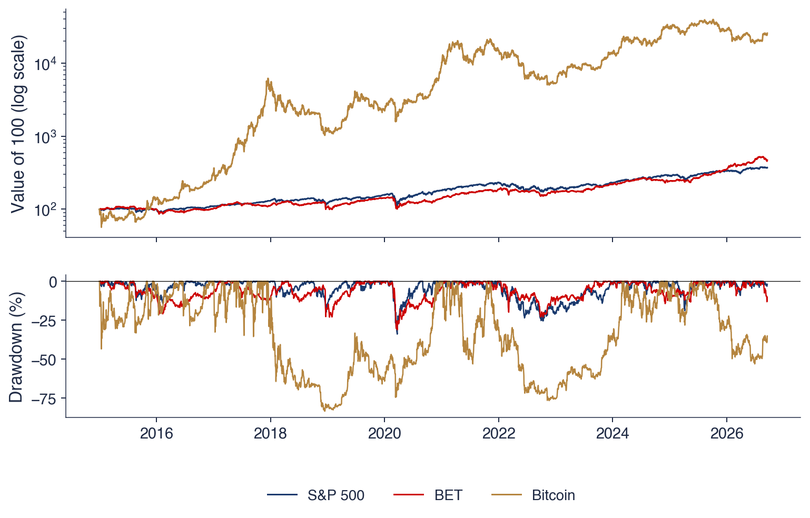

Bucharest University of Economic Studies IDA Institute Digital Assets Blockchain Research Center AI4EFin Artificial Intelligence for Energy Finance Romanian Academy, Institute for Economic Forecasting MSCA Digital Finance
Self-assessment: the quiz of this chapter, 20 questions from all chapters
Our description emphasizes properties common to a wide variety of markets and instruments. We then show how these statistical properties invalidate many of the common statistical approaches used to study financial data sets …
Chapters 0–15 built, step by step, a chain from observed prices to risk numbers that can be tested: correctly computed returns, heavy-tailed distributions, dependence in time, volatility models and, at the end, VaR (value at risk) and ES (expected shortfall) checked by backtesting. This review chapter walks the chain again, this time with three series on one common window: the US S&P 500 index, the BET (Bucharest Exchange Trading) index of the Bucharest Stock Exchange and Bitcoin, from 5 January 2015 to 18 September 2026.
The three series differ greatly in risk: annual volatility is 17.7% for the S&P 500, 15.5% for the BET and 66.7% for Bitcoin. Their stylised facts are the same: negative skewness, excess kurtosis above 10, Hill tail indices between 2 and 3, nearly uncorrelated returns and strongly autocorrelated absolute returns. A VaR 1% computed with the Normal distribution is too small for all three, by 18% to 25%. These common regularities are the reason why the same statistical tools work on an emerging market, on the largest equity market in the world and on a crypto market.
The chapter has three parts. The first revisits every chapter through its key formula, its key empirical fact and its most common mistake, then collects the tests and models in an overview of methods. The second presents the written assessment, eight fully solved problems and the team project. The third poses an open question about the Romanian market to which the course methods can contribute, and shows what an AI (artificial intelligence) assistant can do in such a project and what must be checked.

Top: the value of 100 units invested at the start of 2015 in the S&P 500 (dark blue), the BET (red) and Bitcoin (gold), on a log scale. Bottom: the drawdown of each series, in per cent, from the highest level reached up to that date.
Learning outcomes
Place every chapter on the path from prices to risk numbers and name the question it answers.
Recall the key formula, the key empirical fact and the most common mistake of each chapter.
Choose the right test or model for a given question about a return series.
Solve review problems step by step and interpret the result in three to five sentences.
Plan the team project, its oral defence and the declaration of AI use.
Chapter plan
The Course MapHow the chapters connect, the main thread and the three series compared in one table and two charts.
Overview of MethodsWhich test or model answers which question, the course conventions and common methodological errors.
The ExamFormat, content, grading criteria and eight solved problems.
The Team ProjectDeliverables, criteria, the oral defence and the file AI_USE.md.
AI Tools for a Research ProjectAn open question about the BET, the steps of a research project, AI's help and the checks, a project idea.
SummaryKey takeaways and self-assessment questions.
The Course Map
This section shows the course as a whole: how the chapters connect, which main thread leads from prices to a testable risk number, and what all the tools of the course give when applied at once to the S&P 500, the BET and Bitcoin. The table and the two charts here are the chapter's reference results; the sections that follow revisit each chapter in turn.
The diagram places the sixteen chapters on three rows. The first row, "Data and distributions", runs from markets and data (Chapter 0) to returns and indicators, classical distributions and stylised facts, α-stable laws, heavy tails and extreme value theory (EVT) and model selection. The second row, "Time, volatility and risk", starts from probability and stochastic processes, passes through market efficiency, long memory, volatility estimators and ARCH–GARCH models, and arrives at VaR, ES and backtesting. The third row, "Applications", holds scoring models, machine learning, crypto assets and systemic risk.
The red arrows mark the main thread: returns (Chapter 1) and their distribution (Chapter 2) lead, through heavy tails and through volatility, to a risk number that can be tested (Chapter 10). The second row separates two different questions about dependence in time: the sign of returns is hard to anticipate (Chapters 7 and 11), while their size is predictable (Chapters 8 and 9).
The applications row introduces no new statistics but reuses the tools of the first two rows. Credit scoring starts from probability, machine learning starts from the volatility models, and crypto assets and systemic risk start from the risk measures of Chapter 10.
The chain has four links. The first is the data: prices from a single source, adjusted for dividends and splits, on the market's correct calendar. From them come the daily log returns, in per cent,
\[r_t = 100\,\ln\frac{P_t}{P_{t-1}},\]
where \(P_t\) is the closing price on day \(t\). The second link is the distribution of returns (Chapters 2–6): it has heavy tails, so the Normal distribution is replaced by the Student-\(t\), by stable laws or by EVT, and the choice among models is made with the likelihood, with the AIC (Akaike information criterion) and with tests focused on the tails.
The third link is dependence in time (Chapters 7–11). For the mean, the variance ratio and the Hurst exponent show that the sign of tomorrow's return is almost unpredictable. For the variance, EWMA (exponentially weighted moving average) and GARCH (generalised autoregressive conditional heteroskedasticity) show that its size is predictable. The fourth link is risk (Chapter 10): VaR 1% and ES 2.5%, always followed by backtesting.
The applications in Chapters 12–15 reuse the same chain: data, distribution, dependence, risk, evaluation. A scoring model, a machine-learning forecast or a measure of systemic risk is judged in the same way, by the uncertainty of its estimates and by its out-of-sample performance.
In brief
Data (Chapters 0–1): prices from one source, adjusted, on the right calendar
returns: \(r_t = \ln(P_t/P_{t-1})\), in % for one day
Distribution (Chapters 2–6): heavy tails, not the Normal distribution
Student-\(t\), stable laws, EVT; the model is chosen with likelihood, AIC and tail tests
Dependence in time (Chapters 7–11): the sign is almost unpredictable, the size is predictable
variance ratio and Hurst for the mean; EWMA and GARCH for the variance
Risk (Chapter 10): VaR 1% and ES 2.5%, with a backtest
the applications (Chapters 12–15) reuse the same chain: data, distribution, dependence, risk, evaluation
Daily log returns on the chosen window (the table of the slide for January 2015)
Question for the room With the window from January 2021 (▶, extra run), does the Ljung–Box Q(10) test still reject no autocorrelation in the S&P 500 returns?
Answer
No: Q(10) = 9.1 < 18.31 (p = 0.52), against 236 on the window from 2015, while on rₜ² it stays at 291. The large statistic of the table comes largely from the days of March 2020, when large returns of opposite signs followed each other (ρ̂₁ = −0.13); volatility clustering shows in every window.
Question for the room ▶ moves to the level α = 5%. Is the Normal VaR still too low against the historical VaR?
Answer
No: at 5% the Normal VaR is too high, by 7.8% (S&P 500: 1.79% against 1.66%), 13.1% (BET) and 6.4% (Bitcoin). The return distribution has more mass in the centre and in the far tails than the Normal distribution with the same variance, so the two quantiles cross between 1% and 5% (at 2.5% the BET difference is −0.5%). The Normal VaR understates risk exactly at the small levels used in regulation.
Question for the room ▶ moves the start of the window to January 2019 (extra run). Which of the three maximum drawdowns changes?
Answer
Only Bitcoin’s: −76.6% (from 8 November 2021 to 21 November 2022) instead of −83.4% (December 2017 – December 2018). The S&P 500 (−33.9%) and the BET (−31.1%) keep their trough of 23 March 2020, which stays in the window. The maximum drawdown depends on the sample: it measures the largest fall observed, not a fixed property of the asset.
The chart has two panels sharing the horizontal axis, from 2015 to 2026. The top panel shows the value of 100 units invested on 2 January 2015 in the S&P 500, the BET and Bitcoin, on a log scale with ticks at 100, 1,000 and 10,000. The log scale makes percentage changes comparable: the same vertical distance means the same relative growth, whatever the level. On it, the S&P 500 and the BET climb along close lines, while Bitcoin grows more than 250-fold, with much wider swings.
The bottom panel shows the drawdown of each series, the percentage distance from the highest price reached so far:
The maximum drawdown (MDD) is \(-33.9\%\) for the S&P 500 and \(-31.1\%\) for the BET, both in March 2020, at the start of the pandemic. For Bitcoin it is \(-83.4\%\), reached in December 2018, and the panel shows a second fall of comparable size in 2022.
The chart brings together two ideas from Chapter 0. A large gain over the whole period can coexist with intermediate losses that would have been hard to bear, and the risk of an investment is not described by volatility alone: the drawdown says how much an investor who bought at the peak actually lost.
In brief
100 invested on 2 January 2015 (log scale) and the drawdown \(P_t/\max_{s \le t}P_s - 1\)
Maximum drawdown: S&P 500 \(-33.9\%\), BET \(-31.1\%\) (both in March 2020), Bitcoin \(-83.4\%\)
The table applies the tools of the course to the daily log returns of the three series, each on its own calendar, from the first return (5 January 2015 for the S&P 500, 6 January for the BET, 2 January for Bitcoin) to 18 September 2026: 2,943 observations for the S&P 500 (252 per year), 2,925 for the BET (250 per year) and 4,278 for Bitcoin (365 per year). The first rows describe performance: the mean log return is 11.2% per year for the S&P 500, 13.2% for the BET and 47.4% for Bitcoin, and the volatilities are 17.7%, 15.5% and 66.7%. The Sharpe ratio, computed with a risk-free rate of zero, is 0.72, 0.93 and 1.04, each with a standard error (SE) of 0.33–0.36.
The middle rows describe the distribution and the dependence. Skewness is negative for all three series (−0.64, −1.41 and −0.73), excess kurtosis is 15.8, 17.8 and 12.2, and the Hill tail index of losses, estimated with 2.5% of the observations in the tail, is 2.75, 2.19 and 2.67. The Ljung–Box statistic \(Q(10)\) is 236, 55 and 21 for the returns, but 3,166, 701 and 211 for their squares, against the 5% critical value of 18.31 of the \(\chi^2(10)\) distribution. The five-day variance ratio, VR(5), is 0.84, 1.17 and 0.99, with robust statistics \(Z^*(5)\) of −1.34, 1.93 and −0.22. The GARCH(1,1)-\(t\) persistence, \(\alpha + \beta\), is 0.993, 0.925 and 1.000.
The last rows give risk and memory. The historical VaR 1% is 3.29% for the S&P 500, 2.72% for the BET and 10.60% for Bitcoin, and the Normal VaR 1% is 2.55%, 2.23% and 7.99%. The historical ES 2.5% is 3.53%, 3.21% and 10.93%. The Hurst exponent estimated by the R/S (rescaled range) method is 0.53, 0.59 and 0.59 for returns and 0.84, 0.75 and 0.78 for absolute returns.
In brief
Daily log returns
S&P 500
BET
Bitcoin
Observations (per year)
2 943 (252)
2 925 (250)
4 278 (365)
Mean log return, % a year
\(11.2\)
\(13.2\)
\(47.4\)
Volatility, % a year
\(17.7\)
\(15.5\)
\(66.7\)
Sharpe ratio (\(r_f = 0\)) \(\pm\) SE
\(0.72 \pm 0.33\)
\(0.93 \pm 0.35\)
\(1.04 \pm 0.36\)
Skewness; excess kurtosis
\(-0.64\); \(15.8\)
\(-1.41\); \(17.8\)
\(-0.73\); \(12.2\)
Hill tail index of losses (\(k = 2.5\%\,n\))
\(2.75\)
\(2.19\)
\(2.67\)
Ljung–Box \(Q(10)\): \(r_t\); \(r_t^2\)
\(236\); \(3166\)
\(55\); \(701\)
\(21\); \(211\)
VR(5); robust \(Z^*(5)\)
\(0.84\); \(-1.34\)
\(1.17\); \(1.93\)
\(0.99\); \(-0.22\)
GARCH(1,1)-\(t\): \(\alpha + \beta\)
\(0.993\)
\(0.925\)
\(1.000\)
VaR 1%: historical; Normal (%)
\(3.29\); \(2.55\)
\(2.72\); \(2.23\)
\(10.60\); \(7.99\)
ES 2.5%, historical (%)
\(3.53\)
\(3.21\)
\(10.93\)
Hurst (R/S): \(r_t\); \(|r_t|\)
\(0.53\); \(0.84\)
\(0.59\); \(0.75\)
\(0.59\); \(0.78\)
Window: first return 5 January 2015 (S&P 500), 6 January 2015 (BET), 2 January 2015 (Bitcoin) – 18 September 2026; each series on its own calendar (Bitcoin: 365 days a year); critical value of \(\chi^2(10)\) at 5%: \(18.31\)
The first reading concerns return and risk. Bitcoin's volatility is 3.8 times that of the S&P 500 and 4.3 times that of the BET. The Sharpe ratios seem to rank the three investments (1.04 for Bitcoin, 0.93 for the BET, 0.72 for the S&P 500), but the differences are small relative to their standard errors: a 95% confidence interval around each ratio also covers the values of the other two. With almost twelve years of data, we cannot say which of them had the best trade-off between return and risk.
The second reading concerns the distribution. Negative skewness, excess kurtosis above 10 and tail indices between 2 and 3 say the same thing: large losses are much more frequent than the Normal distribution predicts. The practical consequence appears in the VaR row: the Normal VaR 1% is smaller than the historical one by 22% for the S&P 500, 18% for the BET and 25% for Bitcoin. A Normal model systematically understates the loss on a bad day.
The third reading concerns dependence. The Ljung–Box statistic on \(r_t^2\) is 10 to 13 times larger than on \(r_t\): volatility, not the return, has structure in time. The robust variance-ratio test does not reject the random walk at 5% for any of the series (for the BET, \(Z^*(5) = 1.93\) is just below the 1.96 threshold), and the Hurst exponent is well above 0.5 only for absolute returns. Volatility persistence is close to 1; for Bitcoin it is exactly 1, an IGARCH (integrated GARCH) model, in which a volatility shock never dies out.
In brief
Return and risk: Bitcoin has about four times the volatility of the two indices
the Sharpe ratios are close once their standard errors are taken into account
Distribution: negative skewness, excess kurtosis above 10, Hill indices between 2 and 3
the Normal VaR 1% is too low by 22% (S&P 500), 18% (BET) and 25% (Bitcoin)
Dependence: Ljung–Box on \(r_t^2\) is many times larger than on \(r_t\)
the robust VR test rejects no random walk at 5% here; \(H\) of \(|r_t|\) is far above 0.5
volatility is persistent: \(\alpha + \beta\) close to 1 (Bitcoin: an IGARCH, \(\alpha + \beta = 1\))
Stylised Facts: ACF of Returns and Absolute Returns
Question for the room With the window from January 2021 (▶, extra run), which Sharpe ratios have a 95% interval that contains 0?
Answer
The S&P 500 (0.85, CI [−0.10, 1.81]) and Bitcoin (0.60, CI [−0.29, 1.49]); the BET (1.53, CI [0.32, 2.74]) does not. With about 5.7 years of data the standard error √((1 + SR²/2)/Y) is close to 0.5: even a Sharpe ratio of 0.85 is not separated from zero.
Question for the room ▶ moves to the BET. Does α̂ rise from daily to monthly returns, as for the S&P 500 (1.54 → 1.82)?
Answer
Not clearly: 1.49 daily, 1.56 weekly, 1.50 monthly, and the monthly interval [1.33, 1.67] is wide; the BET is the exception of the slide. The running sample variance of the BET still falls from 3.32 (2010) to 1.96 (2026) and settles down, as a finite variance does. For Bitcoin the monthly α̂ reaches the bound α = 2.
Question for the room With the window from January 2021 (▶, extra run), what does ρ̂₁(|r|) of the S&P 500 become?
Answer
It falls to 0.16 from 0.36, because the days of March 2020 left the sample; all 50 autocorrelations of |r| stay positive. The size of the autocorrelation depends on the crises in the window, its persistent positive sign does not.
The chart has three panels, for the S&P 500, the BET and Bitcoin. The horizontal axis is the lag, from 1 to 50 days, and the vertical axis is the autocorrelation. Dark-blue bars are the autocorrelations of returns \(r_t\), red bars are the autocorrelations of absolute returns \(|r_t|\), and the shaded band around zero is the interval \(\pm 1.96/\sqrt{T}\), inside which an autocorrelation is not significantly different from zero under independence.
The autocorrelations of returns are small and mostly inside the band; the most visible exceptions are for the S&P 500, where the first lag is negative. The autocorrelations of absolute returns are positive at all 50 lags for the S&P 500 and Bitcoin, and at 49 of them for the BET (at lag 43 it is −0.001), and they decay slowly: at the first lag they are 0.36 for the S&P 500, 0.29 for the BET and 0.22 for Bitcoin. This is the graphical form of volatility clustering: a turbulent day is more likely to be followed by other turbulent days.
The lesson of the chart is that uncorrelated does not mean independent. The absence of autocorrelation in \(r_t\) does not allow the conclusion that returns are independent, because a function of them, \(|r_t|\), is strongly autocorrelated. This observation, one of the stylised facts described by Cont (2001), justifies modelling the conditional variance separately in Chapters 8 and 9.
In brief
Returns: autocorrelations small and mostly inside the band \(\pm 1.96/\sqrt{T}\); absolute returns: positive at 50, 49 and 50 of the 50 lags (BET lag 43: \(-0.001\))
Uncorrelated is not independent: \(\hat\rho_1(|r|) = 0.36\) (S&P 500), \(0.29\) (BET), \(0.22\) (Bitcoin)
On the same window, the S&P 500, the BET and Bitcoin differ in the level of risk but share the same stylised facts: negative skewness, heavy tails with a tail index between 2 and 3, nearly uncorrelated returns and persistent volatility. The Normal distribution understates the VaR 1% of all three series, and the differences between the Sharpe ratios are not statistically significant.
Chapters 0–3: Data, Returns and Distributions
The first four chapters set up the object of study: how to obtain clean data, how to turn prices into returns, how to summarise the performance of an investment and what shape the return distribution has. Each chapter is revisited on two slides: the key formulas with their notation, then the empirical facts and the common mistakes.
The first formula of the course is the annualisation of volatility. If \(\sigma\) is the standard deviation of daily returns and \(A\) is the number of observations per year, the annualised volatility is \(\sigma_{\text{ann}} = \sqrt{A}\,\sigma\). The square-root rule comes from the fact that the variance of a sum of uncorrelated returns is the sum of the variances, so the annual variance is \(A\) times the daily one. The value of \(A\) depends on the market: about 252 for equities, which trade only on business days, and 365 for crypto assets, which trade every day.
The second formula is the drawdown, \(D_t = P_t/\max_{s \le t}P_s - 1\), where \(P_t\) is the price on day \(t\) and \(\max_{s \le t}P_s\) is the highest price reached up to that day. By construction \(D_t \le 0\): the drawdown is zero at a new high and negative otherwise. The maximum drawdown, \(\mathrm{MDD} = \min_t D_t\), is the largest loss suffered by an investor who bought at the peak and sold at the trough.
The two measures complement each other. Volatility describes the typical size of daily changes, regardless of their order, while the drawdown depends on the sequence of returns: a run of consecutive losses produces a large drawdown even if each loss, taken alone, is modest.
In brief
Key formulas
annualised volatility \(\sigma_{\text{ann}} = \sqrt{A}\,\sigma\), \(A\) = observations per year (252 for shares, 365 for crypto)
Since 2015, the annual volatility of the S&P 500 is 17.7% and that of Bitcoin is 66.7%, almost four times higher. The most severe episode in the history of the BET was the global financial crisis: the index lost 82.5% between 24 July 2007 and 25 February 2009 and returned to its 2007 peak only on 16 March 2021, more than thirteen years later. The length of the recovery is a dimension of risk that volatility does not capture.
The common mistakes of this chapter concern the data. Prices taken from several sources may have different closing times, adjustments or calendars, and a series spliced from them produces false returns at the joins. Unadjusted prices of stocks that pay dividends or split show a sudden drop on the adjustment day, although the investor lost nothing.
The second mistake concerns verification. A number or a bibliographic reference obtained with an AI assistant must be recomputed, or opened at its source, before it is used: AI assistants easily produce plausible numbers and references that do not exist.
In brief
Empirical facts
since 2015: volatility 17.7% a year for the S&P 500, 66.7% for Bitcoin
BET: \(-82.5\%\) from 24 July 2007 to 25 February 2009; back to the peak only on 16 March 2021
Common mistakes
prices from several sources mixed, or unadjusted prices for shares with dividends and splits
a referenced number or paper produced by AI and never checked
The simple return is \(R_t = P_t/P_{t-1} - 1\) and the log return is \(r_t = \ln(1 + R_t)\). The two aggregate differently. Log returns add up over time, because the log of a product of growth factors is the sum of the logs. Simple returns add up across assets: the return of a portfolio is the weighted average of the simple returns of its components.
Long-run performance is summarised by the compound annual growth rate, \(\mathrm{CAGR} = (P_T/P_0)^{1/Y} - 1\), where \(Y\) is the number of years. The Sharpe ratio, \(\mathrm{SR} = (\mu - r_f)/\sigma\), divides the annual excess return by the annual volatility, and its standard error is approximately
so it depends on the number of years, not on the number of daily observations. With ten years of data the standard error is around 0.3, which is why the Sharpe ratios of ordinary investments can rarely be told apart statistically.
Volatility drag is the difference between the arithmetic mean return and the compound growth rate, approximately \(\sigma^2/2\) per year. It explains why a volatile investment grows more slowly than its mean return suggests: a loss of 50% followed by a gain of 50% leaves the investor with 75% of the capital.
In brief
Key formulas
\(R_t = P_t/P_{t-1} - 1\), \(r_t = \ln(1 + R_t)\); log returns add over time, simple returns add across assets
For the BET since 2015, the CAGR is 14.1%, annual volatility is 15.5% and the Sharpe ratio is 0.93, with a 95% confidence interval (CI) from 0.24 to 1.61. The interval is wide: with almost twelve years of data, the BET's Sharpe ratio is positive with statistical certainty, but its exact value remains uncertain.
Bitcoin illustrates volatility drag. The arithmetic mean of its annual returns is 69.5%, but the CAGR is only 60.6%. The difference of about nine percentage points is the cost of high volatility: an investor who held Bitcoin over the whole period earned the compound rate, not the arithmetic mean.
The common mistakes follow from these definitions. Adding simple returns over time, using the arithmetic mean instead of the CAGR for realised performance, annualising Bitcoin's volatility with 252 days instead of 365 and reporting a Sharpe ratio without its standard error each lead to wrong conclusions about performance.
In brief
Empirical facts
BET since 2015: CAGR 14.1%, volatility 15.5%, Sharpe 0.93 with 95% CI [0.24, 1.61]
Bitcoin: arithmetic mean 69.5% a year, CAGR only 60.6%: the volatility drag
Common mistakes
adding simple returns over time; averaging returns instead of computing the CAGR
annualising with 252 for Bitcoin; reporting a Sharpe ratio without its standard error
Chapter 2: Classical Distributions and Stylised Facts (1/2)
The shape of the distribution is summarised by the central moments \(m_k = \frac1n\sum_t (r_t - \bar r)^k\). Skewness is \(S = m_3/m_2^{3/2}\) and excess kurtosis is \(K = m_4/m_2^2 - 3\); both are zero for the Normal distribution. The Jarque–Bera (JB) test combines the two departures from normality (Jarque & Bera, 1980):
For heavy tails, the classical alternative is the Student-\(t\) distribution with \(\nu\) degrees of freedom. Its excess kurtosis is \(6/(\nu - 4)\) for \(\nu > 4\), so a small \(\nu\) means heavy tails, and for \(\nu \le 4\) the fourth moment does not exist. Dependence in time is tested with the Ljung–Box statistic
where \(\hat\rho(h)\) is the sample autocorrelation at lag \(h\) and \(m\) is the number of lags; under no autocorrelation, \(Q(m)\) is approximately \(\chi^2(m)\).
\(m_k = \frac1n\sum_t (r_t - \bar r)^k\): the \(k\)-th central moment; \(S\): skewness; \(K\): excess kurtosis (0 for the Normal distribution)
JB: Jarque–Bera, \(\chi^2(2)\) under normality; \(\nu\): degrees of freedom; \(\hat\rho(h)\): the autocorrelation at lag \(h\); \(m\): the number of lags
Chapter 2: Classical Distributions and Stylised Facts (2/2)
For the BET since 2010, skewness is −0.98, excess kurtosis is 17.9 and the Jarque–Bera statistic is 56,762, far above any critical value. The fitted Student-\(t\) distribution has \(\hat\nu = 2.96\) degrees of freedom, below the threshold of 4, which means that, if the model is right, the fourth moment is not finite.
The first-order autocorrelation of BET returns is 0.03, almost zero, but that of absolute returns is 0.34. The two numbers summarise two of the six stylised facts described by Cont (2001): the absence of autocorrelation in returns and volatility clustering.
The first common mistake is confusing the kurtosis coefficient, \(K + 3\), with excess kurtosis, \(K\): the Normal distribution has kurtosis 3 and excess 0. The second is concluding that returns are independent because the autocorrelation function (ACF) of \(r_t\) is not significant; independence requires that non-linear functions of returns be uncorrelated too.
In brief
Empirical facts
BET since 2010: \(S = -0.98\), \(K = 17.9\), JB \(=\) 56 762; fitted Student-\(t\): \(\hat\nu = 2.96\)
\(\hat\rho_1(r) = 0.03\) but \(\hat\rho_1(|r|) = 0.34\): the six stylised facts of Cont (2001)
Common mistakes
reading the kurtosis \(K + 3\) as the excess kurtosis (the Normal distribution has kurtosis 3, excess 0)
concluding independence from a non-significant ACF of \(r_t\)
where \(\overset{d}{=}\) means equality in distribution, \(d_n\) is a shift and \(\alpha \in (0, 2]\) is the stability index. For \(\alpha = 2\) we obtain the Normal distribution. For \(\alpha < 2\), the tails decay as a power, \(P(X > x) \sim c\,x^{-\alpha}\), and the moment of order \(p\) exists only for \(p < \alpha\); in particular, the variance is infinite.
The family has four parameters: \(\alpha\) for the tails, \(\beta\) for skewness, \(\gamma\) for scale and \(\delta\) for location (Nolan, 2020). The same parameters can be defined in several parameterisations, of which S0 and S1 are the most used. They give the same \(\alpha\),\(\beta\) and \(\gamma\), but the location parameter \(\delta\) has different meanings, so the parameterisation must be stated every time.
Fitted by maximum likelihood to daily data since 2000, stable laws give \(\hat\alpha = 1.49\) for the BET, \(1.54\) for the S&P 500 and \(1.41\) for Bitcoin. The values are close to those found by Mandelbrot (1963) for cotton prices and would suggest that the variance of returns is infinite.
Other evidence contradicts this conclusion. The sample variance computed on longer and longer samples stabilises, which would not happen if the variance were infinite. Aggregation gives a second test: if daily returns were stable, \(\hat\alpha\) would stay the same on monthly returns, and if the variance is finite, it rises towards 2. For the S&P 500 and Bitcoin, \(\hat\alpha\) increases with the horizon (to \(1.82\) on monthly data for the S&P 500); the BET is the exception, with \(\hat\alpha\) around 1.50 on monthly data too, on a short monthly sample with an imprecise estimate. The overall conclusion is heavy tails with finite variance: the stable law describes the body of the distribution well, but not the extreme tail.
The common mistakes follow from the properties of the family. The standard deviation cannot be used as a measure of scale when \(\alpha < 2\), because the variance does not exist; the scale is \(\gamma\). And the parameter \(\delta\) estimated by two programs cannot be compared if they use different parameterisations.
In brief
Empirical facts
maximum likelihood since 2000: \(\hat\alpha = 1.49\) (BET), \(1.54\) (S&P 500), \(1.41\) (Bitcoin), as Mandelbrot (1963) found for cotton
but \(\hat\alpha\) rises with the horizon (S&P 500: 1.82 on monthly data) and the sample variance settles down: heavy tails with finite variance; the BET is the exception (\(\hat\alpha = 1.50\) on monthly data, no clear rise)
Common mistakes
using the standard deviation as a scale when \(\alpha < 2\) (the variance does not exist)
comparing \(\delta\) from two programs that use different parametrisations
Section summary
Returns are computed in logs, annualised with the market's true frequency and reported with their uncertainty. Their distribution has negative skewness and high excess kurtosis, so the Jarque–Bera test rejects normality for every series of the course. α-stable laws explain the shape of the body of the distribution, but the data point to a finite variance.
Chapters 4–7: Probability, Tails, Model Choice, Efficiency
The four chapters revisited here give the probabilistic foundation of the course and answer three empirical questions: how heavy the tails are, which distribution best describes returns, and whether past returns help to forecast future ones.
where \(a\) and \(b\) are the weights and \(\sigma_X\) and \(\sigma_Y\) the standard deviations. The covariance term explains diversification: with a correlation below 1, the volatility of the portfolio is lower than the weighted average of the volatilities. When a probability \(p\) is estimated by Monte Carlo simulation with \(N\) draws, the estimate is a proportion and its standard error is \(\sqrt{p(1 - p)/N}\).
Geometric Brownian motion (GBM) is the basic model for prices:
where \(t\) is time in years, \(\mu\) is the drift, \(\sigma\) is the volatility and \(W_t \sim N(0, t)\) is a Brownian motion. The mean price is \(S_0e^{\mu t}\) and the median is \(S_0e^{(\mu - \sigma^2/2)t}\), which is lower: the log-normal distribution of the price is skewed to the right, and a few very good paths pull the mean up.
In brief
Key formulas
\(\mathrm{Var}(aX + bY) = a^2\sigma_X^2 + b^2\sigma_Y^2 + 2ab\,\mathrm{Cov}(X, Y)\); Monte Carlo error \(\sqrt{p(1 - p)/N}\)
GBM: \(S_t = S_0\exp((\mu - \sigma^2/2)t + \sigma W_t)\), mean \(S_0e^{\mu t}\), median \(S_0e^{(\mu - \sigma^2/2)t}\)
Notation
\(a\), \(b\): weights; \(\sigma_X\), \(\sigma_Y\): standard deviations; \(p\): the estimated probability; \(N\): the number of Monte Carlo draws
GBM (geometric Brownian motion): \(S_t\): price at time \(t\) (years); \(\mu\): drift; \(\sigma\): volatility; \(W_t \sim N(0, t)\): a Brownian motion
On S&P 500 data since 2000, a day with a return below −5% has an empirical frequency of 0.34%. A Normal distribution with the same mean and volatility gives a probability of 0.0017%, 199 times smaller. The difference is not a detail of estimation but a matter of tail shape: the Normal distribution decays too fast to reproduce the frequency of extreme days.
The second fact concerns estimating the mean. The mean return of the S&P 500 since 2000 is 6.2% per year, with a standard error of 3.7%. For the mean to be significant with a \(t\)-statistic of 3 would take about 86 years of data. The mean return is the hardest parameter to estimate in finance, because its standard error falls only with the square root of the number of years.
The common mistakes are treating uncorrelated variables as independent, confusing the mean and the median of \(S_t\) in a GBM, and reporting a Monte Carlo estimate without its standard error.
In brief
Empirical facts
S&P 500 since 2000: a day below \(-5\%\) has frequency 0.34%; the Normal distribution gives 0.0017%, 199 times less
mean return 6.2% a year with SE 3.7%: about 86 years of data would be needed for \(t = 3\)
Common mistakes
uncorrelated taken for independent; the mean of \(S_t\) taken for its median
a Monte Carlo estimate without its standard error
Chapter 5: Heavy Tails and Extreme Value Theory (1/2)
The Hill estimator (Hill, 1975) measures how fast the tails of losses decay. If \(L_{(1)} \ge L_{(2)} \ge \dots\) are the losses sorted in decreasing order and \(k\) is the number of observations in the tail,
with approximate standard error \(\mathrm{SE}(\hat\alpha_k) \approx \hat\alpha_k/\sqrt k\). A small \(\hat\alpha\) means heavy tails; the tail shape parameter used in EVT is \(\xi = 1/\alpha\). The choice of \(k\) is a trade-off: a small \(k\) gives a noisy estimate, a large \(k\) brings in observations from the body of the distribution and biases the estimate.
The peaks-over-threshold method models losses above a threshold \(u\) with the generalised Pareto distribution (GPD), with scale \(\beta\) and shape \(\xi\). If \(N_u\) of the \(n\) losses exceed the threshold, the VaR at level \(\alpha\) is
\[\mathrm{VaR}_\alpha = u + \frac{\beta}{\xi}\left[\left(\frac{n\alpha}{N_u}\right)^{-\xi} - 1\right],\]
where, this time, \(\alpha\) is the VaR level (for example 1%), not the tail index. The second EVT approach, block maxima, fits the generalised extreme value (GEV) distribution to the maxima of losses over fixed periods.
GPD above \(u\): VaR \(= u + \frac{\beta}{\xi}[(n\alpha/N_u)^{-\xi} - 1]\); GEV for block maxima
Notation
\(L_{(i)}\): the \(i\)-th largest loss; \(k\): the number of tail observations; \(\xi = 1/\alpha\): the shape (tail) parameter
GPD: \(u\): the threshold; \(\beta\): the scale; \(N_u\): the losses above \(u\) out of \(n\); in the VaR formula \(\alpha\) is the level (1%), not the tail index
Chapter 5: Heavy Tails and Extreme Value Theory (2/2)
The tail index of losses is 2.57 for the BET since 1997, with a 95% confidence interval from 2.20 to 2.95, 2.97 for the S&P 500 and 2.71 for Bitcoin. All values lie between 2 and 3: the variance is finite, but the fourth moment, and hence kurtosis, is not. This explains why sample excess kurtosis is so large and so unstable.
The consequence for risk shows at very small levels. For the BET, the VaR 0.1% computed with EVT is 9.6%, while the Normal distribution gives only 4.5%, less than half. The smaller the VaR level, the more the Normal distribution understates the loss.
The common mistakes concern how the estimator is applied. \(k\) must be chosen on the Hill plot, which shows \(\hat\alpha_k\) against \(k\), by looking for a stable region; \(\hat\alpha\) must be reported with its interval; and the estimator is applied to losses \(L = -r\), not to returns, because otherwise it describes the tail of gains.
In brief
Empirical facts
tail index of the losses: BET 2.57 (95% CI [2.20, 2.95], since 1997), S&P 500 2.97, Bitcoin 2.71
BET, VaR 0.1%: EVT 9.6%, Normal only 4.5%
Common mistakes
choosing \(k\) without looking at the Hill plot; reporting \(\hat\alpha\) without an interval
applying the Hill estimator to returns instead of losses \(L = -r\)
Chapter 6: Model Selection and Risk Management (1/2)
For two nested models, the likelihood ratio (LR) test compares the maximised log-likelihoods \(\ell_0\) of the restricted model and \(\ell_1\) of the extended one: \(LR = 2(\ell_1 - \ell_0)\) is approximately \(\chi^2(k_1 - k_0)\), where \(k_0\) and \(k_1\) are the numbers of parameters. For non-nested models, information criteria are used:
where \(k\) is the number of parameters and \(n\) the sample size; a smaller AIC or BIC (Bayesian information criterion) indicates a better model. Both penalise complexity, BIC more heavily in large samples.
Goodness-of-fit tests compare the empirical distribution function \(F_n\) with the model \(F\). The Kolmogorov–Smirnov (KS) statistic, \(D_n = \sup_x|F_n(x) - F(x)|\), is the largest vertical distance between the two and is dominated by the centre of the distribution. The Anderson–Darling (AD) test weights the differences so that the tails count more, which makes it better suited to risk measures.
KS: \(D_n = \sup_x|F_n(x) - F(x)|\); Anderson–Darling weights the tails
Notation
\(\ell_0\), \(\ell_1\): the maximised log-likelihoods of the smaller and of the larger model; \(k_0\), \(k_1\), \(k\): numbers of parameters; \(n\): sample size
\(F_n\): the empirical distribution function; \(F\): the model; \(D_n\): their largest vertical distance; smaller AIC or BIC is better
Chapter 6: Model Selection and Risk Management (2/2)
For the BET since 2000, the Anderson–Darling statistic is 161 for the Normal distribution, 0.54 for the Student-\(t\) and 0.40 for the NIG (normal inverse Gaussian). The Normal distribution is firmly rejected, and the two heavy-tailed distributions are much closer to the data, the NIG being slightly better.
The choice of model changes the reported risk. The BET's VaR 1% is 3.19% with the Normal distribution and between 3.74% and 4.94% with the heavy-tailed models. The difference between models is larger than the gap between the two ends of the confidence interval of any single estimate, so the choice of distribution is a risk-management decision, not a technical detail.
Two mistakes are common. The LR test comparing the Student-\(t\) with the Normal distribution tests a value on the boundary of the parameter space (\(\nu = \infty\)), where the usual \(\chi^2\) distribution does not apply and the critical value must be corrected. In large samples, goodness-of-fit tests reject every model; the models must then be ranked by criteria, not abandoned.
In brief
Empirical facts
BET since 2000, Anderson–Darling: Normal 161, Student-\(t\) 0.54, NIG 0.40
VaR 1% of the BET: Normal 3.19%, heavy-tailed models 3.74–4.94%
Common mistakes
the LR test at the boundary (e.g. \(\nu = \infty\)) without the corrected critical value
rejecting every model with a large \(n\) and stopping there, instead of ranking the models
Chapter 7: Efficient Markets, Random Walk and VR Tests (1/2)
The weak-form efficient market hypothesis states that past prices do not allow excess returns to be forecast (Fama, 1970). The testable null hypothesis is that returns form a martingale difference sequence: the conditional mean of tomorrow's return, given the history, does not depend on that history.
The variance ratio (VR) test compares the variance of \(q\)-day returns with \(q\) times the daily variance. For a random walk the ratio is 1; in terms of the autocorrelations \(\rho(k)\),
A VR above 1 indicates positive autocorrelation (momentum), a VR below 1 indicates mean reversion. The robust statistic of Lo & MacKinlay (1988),\(Z^*(q) = (\widehat{\mathrm{VR}}(q) - 1)/\sqrt{\hat\theta/T}\), uses an estimate \(\hat\theta\) of the variance that remains valid under volatility clustering and is approximately \(N(0, 1)\) under the null; \(T\) is the number of returns.
In brief
Key formulas
weak-form efficiency: past prices do not predict excess returns Fama (1970); null: martingale differences
For the BET since 1997, VR(5) is 1.28 and the robust statistic \(Z^* = 5.25\) rejects the random walk: returns on the Romanian market have shown momentum. For the S&P 500 since 1990, VR(5) is 0.86, with \(Z^* = -2.76\), a significant mean reversion. For Bitcoin, \(Z^* = -0.19\), so the random walk is not rejected.
The first common mistake is using the statistic \(Z(q)\), built for independent and identically distributed (i.i.d.) returns, on series with volatility clustering. Its standard error is then too small, so the test rejects a true null hypothesis too often.
The second mistake concerns interpretation. A unit root in prices does not prove efficiency, because a price with autocorrelated returns can also have a unit root. And statistically significant predictability does not mean profit: trading costs and risk can wipe out the gain.
In brief
Empirical facts
BET since 1997: VR(5) \(= 1.28\), \(Z^* = 5.25\) (momentum)
the i.i.d. statistic \(Z(q)\) on returns with volatility clustering (it rejects too often)
a unit root in prices read as proof of efficiency; predictability read as profit
Section summary
Probability gives the basic tools of the course: the variance of a portfolio, the standard error of a simulation and the properties of GBM. The tail indices of losses lie between 2 and 3 for every series of the course, and heavy-tailed models give a larger and more realistic VaR 1% than the Normal distribution. Robust variance-ratio tests reject the random walk for the BET over the long sample and for the S&P 500 since 1990, but not for Bitcoin.
Chapters 8–11: Volatility, Risk and Memory
This part of the course deals with the size of returns, their predictable part: how volatility is estimated, how its dynamics is modelled, how it becomes a risk measure that can be checked, and whether returns have long memory.
where \(\lambda \in (0, 1)\) is the decay factor. The weight of an observation \(j\) days old is proportional to \(\lambda^j\), and the half-life, the number of days after which the weight falls by half, is \(\ln 0.5/\ln\lambda\).
Range-based estimators use the high \(H_t\) and the low \(L_t\) of the day. The Parkinson estimator, \((\ln H_t - \ln L_t)^2/(4\ln 2)\), is more precise than the squared close-to-close return, because the day's range contains more information than two closing prices. The ARCH-LM (ARCH Lagrange multiplier) test checks for volatility clustering: \(r_t^2\) is regressed on \(q\) of its own lags, and \(nR^2\) is \(\chi^2(q)\) under constant variance.
For the S&P 500, the Ljung–Box statistic \(Q(10)\) is 91 on returns and 8,015 on their squares, against a critical value of 18.31. The gap of almost two orders of magnitude shows that the main dependence lies in the variance. With \(\lambda = 0.94\), the RiskMetrics value for daily data, the EWMA half-life is 11.2 days.
The advantage of EWMA over a rolling window is the absence of the ghost effect. In a fixed-length window, all observations have the same weight, and an extreme day lifts volatility abruptly when it enters the window and drops it just as abruptly when it leaves, on a date that has nothing to do with the market. In EWMA, the weight of the extreme day fades gradually.
The second common mistake concerns range estimators applied to prices with overnight jumps. The Parkinson estimator uses only the intraday range and ignores the gap between yesterday's close and today's open, so it understates volatility; the Yang–Zhang correction includes this component.
In brief
Empirical facts
S&P 500: Ljung–Box \(Q(10)\) is 91 on \(r_t\) and 8015 on \(r_t^2\) (critical value 18.31)
EWMA with \(\lambda = 0.94\): half-life of 11.2 days; no ghost effect
Common mistakes
a rolling window of fixed length: one extreme day enters and leaves abruptly (ghost effect)
range estimators on prices with overnight gaps, without the Yang–Zhang correction
where \(\omega\) is the constant, \(\alpha\) measures the reaction to yesterday's shock \(\varepsilon_{t-1}\),\(\beta\) measures memory, and \(\bar\sigma^2\) is the long-run variance, defined only if \(\alpha + \beta < 1\).
The variance forecast at horizon \(h\), made on day \(t\), reverts geometrically to the long-run level:
The persistence \(\alpha + \beta\) gives the speed of reversion, and the half-life of a volatility shock is \(\ln 0.5/\ln(\alpha + \beta)\). Unlike EWMA, which is the special case \(\omega = 0\),\(\alpha + \beta = 1\), GARCH has an equilibrium level to which long-horizon forecasts converge.
\(\omega\): the constant; \(\alpha\): the reaction to yesterday's shock \(\varepsilon_{t-1}\); \(\beta\): the memory; \(\bar\sigma^2\): the long-run variance
\(E_t\): the forecast made at day \(t\); \(h\): the horizon in days; \(\alpha + \beta\): the speed at which the forecast returns to \(\bar\sigma^2\)
The GARCH(1,1) model with Student-\(t\) innovations, fitted to data since 2000, has persistence 0.995 for the S&P 500, with a half-life of 131 days, and 0.991 for the BET, with 74 days. A volatility shock therefore dies out within a few months. For Bitcoin, \(\alpha + \beta = 1.000\): the model is an IGARCH, in which shocks do not die out and the long-run variance is not defined.
Equity indices also need an asymmetric term: a price fall raises volatility more than a rise of the same size (the leverage effect). The GJR (Glosten–Jagannathan–Runkle) and EGARCH (exponential GARCH) models add this effect.
The common mistakes are using Normal innovations for heavy-tailed returns, reporting non-robust standard errors, and computing the long-run variance \(\omega/(1 - \alpha - \beta)\) when \(\alpha + \beta \ge 1\), in which case the formula gives an infinite or negative value with no meaning.
so VaR 1% is the loss exceeded on 1% of days, written as a positive number, and ES 2.5% is the mean loss on the worst 2.5% of days. For a Normal distribution with mean \(\mu\) and standard deviation \(\sigma\),\(\mathrm{VaR}_\alpha = -(\mu + \sigma z_\alpha)\) and \(\mathrm{ES}_\alpha = -\mu + \sigma\varphi(z_\alpha)/\alpha\), where \(z_\alpha\) is the standard Normal quantile and \(\varphi\) the standard Normal density. Unlike VaR, ES is a coherent risk measure (Artzner et al., 1999): it is subadditive, so diversification cannot increase the measured risk.
Backtesting compares VaR forecasts with realised losses. If \(x\) of the \(n\) days are exceptions, the observed rate is \(\hat\pi = x/n\), and the Kupiec test (Kupiec, 1995) compares it with the target \(\alpha\):
For the S&P 500, the historical VaR 1% is 3.46% and the Normal VaR 1% is 2.80%, too small by 19%. In the backtest since 2005, the VaR 1% exception rate is 2.71% for the Normal model, 1.41% for historical simulation (HS), 1.74% for GARCH-\(t\) and 1.58% for filtered historical simulation (FHS), against a target of 1%. The Normal model has almost three times as many exceptions as it should.
The first common mistake is one of convention: a negative VaR, or the phrase "VaR 99%". In the course, VaR 1% refers to the tail probability and is a positive loss. The second is scaling VaR to 10 days by multiplying by \(\sqrt{10}\), which assumes i.i.d. Normal returns; with volatility clustering and heavy tails, the rule can be far off.
The third mistake is checking only the number of exceptions. A model can have the right rate but exceptions concentrated in a few weeks of crisis, exactly when risk matters most; this is why the clustering of exceptions is tested separately.
In brief
Empirical facts
S&P 500, VaR 1%: historical 3.46%, Normal 2.80%, i.e. 19% too low
exception rates since 2005: Normal 2.71%, HS 1.41%, GARCH-\(t\) 1.74%, FHS 1.58% (target 1%)
Common mistakes
a negative VaR or “VaR 99%”: the course writes VaR 1%, a positive loss
\(\sqrt{10}\) scaling as if returns were i.i.d. Normal; checking only the number of exceptions, not their clustering
VaR 1% Forecasts of the BET: Historical Simulation and EWMA-Normal
Question for the room ▶ changes the value of year 2. If the index falls only to 120 (values other than on the slide), what does the CAGR become?
Answer
It stays −1.35%: the CAGR depends only on the first and the last value, (96/100)^(1/3) − 1. The arithmetic mean changes, (60 − 25 − 20)/3 = 5.00%, and so does the maximum drawdown, 96/160 − 1 = −40%.
Question for the room ▶ changes the excess kurtosis. If K falls from 6 to 3, what happens to the kurtosis part of JB?
Answer
It falls to a quarter: 1000/24 × 9 = 375 against 1500, because K enters squared; JB = 41.67 + 375 = 416.7, still far above 5.99. The degrees of freedom of the Student-t distribution with the same K rise to ν = 4 + 6/3 = 6.
Question for the room ▶ moves through the correlations. What is the daily volatility of the portfolio at ρ = −1?
Answer
0.10%: σp² = 0.81 + 1.00 − 1.80 = 0.01. With ρ = −1 the risk does not vanish completely, because the two positions do not offset exactly: 0.6 × 1.5 = 0.9 against 0.4 × 2.5 = 1.0. At ρ = 1, σp = 1.90%, equal to the weighted average.
Review problem: autocorrelation and the variance ratio
Question for the room ▶ changes ρ̂(1). At ρ̂(1) = 0.09, does the robust test Z*(5) reject the random walk?
Answer
Yes: VR(5) = 1 + 2 × 0.082 = 1.164 and Z*(5) = 0.164/0.065 = 2.52 > 1.96 (Z(5) = 3.74, Q(4) = 21.78). With ρ̂(1) = 0.06 the choice of test decided the outcome; here the autocorrelation is large enough to be rejected with the robust standard error too.
Question for the room ▶ changes the sign and the size of the shock. With εₜ = +2.5 instead of −2.5, what is σ²ₜ₊₁?
Answer
Still 2.1945: GARCH(1,1) uses ε², so a gain and a loss of the same size raise the variance alike. Asymmetry (the leverage effect) needs models such as GJR or EGARCH.
Question for the room ▶ raises the number of exceptions. What comes first: the Basel yellow zone or the Kupiec rejection at 5%?
Answer
The yellow zone, from 5 exceptions; as the exceptions grow, the Kupiec test rejects only from 7 (LR = 5.50, p = 0.019; with 6, LR = 3.56 and p = 0.059). In 250 days the test has little power, which is why the Basel traffic light penalises earlier. The test also rejects at 0 exceptions (LR = 5.03): too few exceptions point to a VaR that is too cautious.
Review problem: long memory and risk scaling
\[H = \frac{\log_{10}\big[(R/S)_{2000}/(R/S)_{20}\big]}{\log_{10}(2000/20)}, \quad d = H - 0.5, \quad \mathrm{VaR}^{(h)} = h^H\,\mathrm{VaR}^{(1)}\]
Question for the room ▶ changes R/S for n = 2000. If it is 40 instead of 60, does the h^H scaling still give a larger 10-day VaR than √h?
Answer
No: H = log₁₀(40/4.1)/2 = 0.495 < 0.5, so 10^H = 3.12 and VaR = 7.81%, slightly below 7.91% with √10. The slope decides, not the growth of R/S with n: R/S grows for data without memory as well, with exponent 0.5.
Question for the room ▶ raises the number of good loans flagged as bad. With 120 (values other than on the slide), which rate does not change?
Answer
The TPR, 60/90 = 66.7%: it involves only the bad loans. The accuracy falls to (60 + 90)/300 = 50%, below the rule “always good” (70%), the FPR rises to 57.1% and the precision falls to 60/180 = 33.3%.
Question for the room With a 250-day historical-simulation window (▶, extra run), does the Kupiec test still accept the VaR 1% of the BET?
Answer
No: 38 exceptions (1.57%, 24.2 expected), LR = 6.76, p = 0.009. With 250 days the VaR 1% is the third smallest value of the window, so the tail is estimated from very few observations; with 500 days there are 28 exceptions (p = 0.450), with 750 days 26.
The chart shows the BET's daily returns in per cent (thin blue line), from 2017 to 2026, together with two VaR 1% forecasts, drawn with a minus sign as the threshold below which a return becomes an exception. The gold line is historical simulation over the last 500 days and the red line is the EWMA-Normal model with \(\lambda = 0.94\). Gold dots and red crosses mark the exceptions of the two models.
Since 3 January 2017, over 2,421 days, the expected number of exceptions is 24.2. Historical simulation has 28 exceptions (1.16%), and the Kupiec test does not reject it (\(p = 0.450\)). EWMA-Normal has 55 exceptions (2.27%), and the test rejects it with \(p < 0.001\).
The chart also shows why. The EWMA line follows the storms: after the shocks of December 2018, March 2020 and February 2022 it drops at once, but the Normal quantile is too small, so the threshold is crossed often. The HS line has the right rate on average, but it moves in steps, with a lag, and its exceptions come in clusters, at most 10 in 250 days. Neither model combines an up-to-date volatility with a correct tail; FHS or GARCH-\(t\) do.
The R/S method of Hurst (1951) splits the series into blocks of \(n\) days and computes, in each block, the range of the cumulative deviations from the mean divided by the standard deviation. The mean of this statistic grows with block length as a power,
\[(R/S)_n \propto n^{H},\]
and the Hurst exponent \(H\) is estimated from the slope of \(\log(R/S)_n\) against \(\log n\).\(H = 0.5\) corresponds to no memory, \(H > 0.5\) indicates persistence, and the fractional parameter is \(d = H - 0.5\).
The Hurst exponent changes the risk-scaling rule: the standard deviation of the \(h\)-day return is \(\mathrm{sd}(r^{(h)}) = h^{H}\,\mathrm{sd}(r)\), and the square-root rule is the case \(H = 0.5\). The fractal market hypothesis of Peters (1994) holds that a market is stable when investors with very different horizons, from minutes to years, are active in it and provide liquidity to one another.
In brief
Key formulas
\((R/S)_n \propto n^H\)Hurst (1951); \(H = 0.5\): no memory, \(H > 0.5\): persistence; \(d = H - 0.5\)
risk scaling: \(\mathrm{sd}(r^{(h)}) = h^H\mathrm{sd}(r)\); fractal markets need many investment horizons Peters (1994)
Notation
\((R/S)_n\): the rescaled range (range of the cumulated deviations divided by the standard deviation) on blocks of \(n\) days
\(H\): the Hurst exponent; \(d\): the fractional parameter; \(r^{(h)}\): the \(h\)-day return; sd: the standard deviation
Chapter 11: Fractal Markets Hypothesis and Long Memory (2/2)
For the BET, the Hurst exponent estimated by R/S is 0.58 for returns, at the edge of the Monte Carlo band built for memoryless series of the same length, and the Lo test rejects the absence of memory: weak persistence. For absolute returns, the exponent is 0.79. For the S&P 500, the numbers are 0.53 for returns and 0.86 for absolute returns. Long memory lies in volatility, not in the sign of returns.
The first common mistake is comparing \(\hat H\) with 0.5. The R/S statistic is biased upwards in finite samples, so a memoryless series gives an \(\hat H\) above 0.5; the right comparison is with a Monte Carlo band for the same number of observations \(N\).
The second mistake is attributing long memory to phenomena that imitate it. Structural breaks, such as a shift in the level of volatility, and GARCH effects produce persistent autocorrelations of absolute returns and can give a large \(\hat H\) even when the process has no long memory.
In brief
Empirical facts
BET: \(H\) (R/S) \(= 0.58\) for \(r_t\), at the edge of the Monte Carlo band, and the Lo test rejects: weak persistence; \(0.79\) for \(|r_t|\)
S&P 500: \(0.53\) for returns, \(0.86\) for absolute returns: long memory is in the volatility
Common mistakes
comparing \(\hat H\) with 0.5 instead of a Monte Carlo band for the same \(N\) (R/S is biased upwards)
structural breaks or GARCH taken for long memory
Section summary
Volatility is the predictable part of returns: EWMA tracks it without a ghost effect, and GARCH adds a long-run level and an estimated persistence, close to 1 for every series of the course. The risk measures VaR 1% and ES 2.5% must be checked by backtesting, and on the BET historical simulation passes the Kupiec test while EWMA-Normal fails it. Long memory appears in absolute returns, not in returns.
Chapters 12–15: Applications
The last four chapters apply the tools of the course to lending, to forecasting with machine learning, to the crypto market and to the stability of the banking system. In each case the statistical question is the same: how well the method works out of sample and how uncertain the estimate is.
where PD is the probability of default, LGD (loss given default) is the share lost in default and EAD is the exposure at default. Scoring models estimate the PD. Logistic regression models the log-odds, \(\ln\frac{p}{1-p} = \beta_0 + x^\top\beta\), where \(p\) is the probability of default given the characteristics \(x\), and \(e^{\beta_j}\) is the odds ratio for a one-unit increase in variable \(j\).
Discriminatory power is measured by the area under the ROC curve (AUC; ROC, receiver operating characteristic). The AUC is the probability that a randomly chosen bad borrower receives a higher risk score than a randomly chosen good one: 0.5 means no discrimination, 1 means perfect discrimination. The Gini coefficient is \(2\,\mathrm{AUC} - 1\). Alongside statistical models, the course presented the \(Z\)-score of Altman (1968), built from accounting ratios, and the distance to default of the Merton model, built from equity prices.
In brief
Key formulas
EL \(=\) PD \(\times\) LGD \(\times\) EAD; logit \(\ln\frac{p}{1-p} = \beta_0 + x^\top\beta\), \(e^{\beta_j}\) = odds ratio
AUC \(= P(s_{\text{bad}} > s_{\text{good}})\), Gini \(= 2\,\mathrm{AUC} - 1\); Altman \(Z\) and Merton distance to default Altman (1968)
Notation
EL: expected loss; PD: probability of default; LGD: loss given default; EAD: exposure at default
\(p\): the probability of default given \(x\); \(\beta_j\): a coefficient; \(s\): the score of a bad or a good borrower; AUC \(= 0.5\): no discrimination, 1: perfect
On the German credit data, 1,000 loans of which 300 form the test sample, logistic regression has an AUC of 0.801, with a 95% confidence interval from 0.75 to 0.85, and a Gini coefficient of 0.60. The interval, wide for a quantity often reported to three decimals, comes from the small size of the test sample.
Discrimination is not calibration. A model can rank borrowers correctly and still give default probabilities that are systematically too high or too low; for computing the EL, the values matter, not only the ranking. Both properties are checked out of sample.
The first common mistake is judging a model by accuracy when the classes are imbalanced: if most loans are good, the rule "always good" already has high accuracy without identifying a single bad borrower. The second is choosing the classification threshold without considering the costs of the two errors; rejecting a good client and accepting a bad one do not cost the same.
In brief
Empirical facts
German credit data (1000 loans), test sample of 300: AUC \(= 0.801\), 95% CI [0.75, 0.85], Gini 0.60
discrimination is not calibration: check both, out of sample
Common mistakes
accuracy on imbalanced classes (always “good” is already right in most cases)
choosing the cut-off without the costs of the two errors
where \(\hat f\) is the fitted model and \(\sigma^2\) is the noise variance, which cannot be reduced. Machine-learning methods manage the bias–variance trade-off: ridge and lasso shrink the coefficients (shrinkage), decision trees and boosting choose the non-linearities themselves, and complexity is chosen by validation.
Performance is measured out of sample, against a simple benchmark \(\tilde y\)(Gu, Kelly & Xiu, 2020):
where the sums run over the test sample. A negative \(R^2_{OOS}\) means that the model forecasts worse than the benchmark, which happens often for returns.
For the sign of the daily S&P 500 return since 2008, the naive rule "always up" has an accuracy of 54.4%, logistic regression 53.8% and boosting 52.1%. The more complex models do not beat the benchmark, in line with the efficiency results of Chapter 7: the sign of returns is almost unpredictable.
For realised volatility the picture is different. The HAR (heterogeneous autoregressive) model, which uses the average volatility over the last day, week and month, has \(R^2_{OOS} = 0.61\) against the mean. Lasso reduces the squared error of HAR by only 7.1%: most of the predictability of volatility is captured by a simple linear model.
The common mistakes concern time order. Cross-validation with random splits mixes past and future and introduces look-ahead bias and leakage; on time series, the validation sample must follow the estimation sample. And reporting the best of many strategies tried, without deflating the Sharpe ratio for the number of trials, overstates performance.
In brief
Empirical facts
sign of S&P 500 returns since 2008: “always up” 54.4%, logit 53.8%, boosting 52.1%
realised volatility: HAR \(R^2_{OOS} = 0.61\) against the mean; lasso lowers the squared error of HAR by only 7.1%
Common mistakes
random cross-validation on time series (look-ahead bias and leakage)
reporting the best of many trials without deflating the Sharpe ratio
Crypto assets trade 365 days a year, so their volatility is annualised as \(\sigma_{\text{ann}} = \sqrt{365}\,\sigma\), where \(\sigma\) is the standard deviation of daily returns. The supply of Bitcoin is fixed by the protocol and capped at 21 million coins (Nakamoto, 2008).
Stablecoins are crypto assets that track a fixed price of 1 USD. The deviation from the peg is measured in basis points,
\[d_t = 10{,}000\,(P_t - 1),\]
where \(P_t\) is the stablecoin's price in USD and one basis point is 0.01%. A negative value means that the stablecoin trades below the peg, a sign of distrust in the reserves or the mechanism behind it.
In brief
Key formulas
annualise with 365 days: \(\sigma_{\text{ann}} = \sqrt{365}\,\sigma\); supply of Bitcoin capped at 21 million Nakamoto (2008)
peg deviation of a stablecoin \(d_t = 10\,000\,(P_t - 1)\) basis points
Notation
\(\sigma\): the standard deviation of daily returns; crypto trades 365 days a year
\(P_t\): the price of the stablecoin in USD; 1 basis point \(= 0.01\%\); \(d_t < 0\): below the peg
Bitcoin's annual volatility is 66.6% when annualised with 365 days; wrongly using 252 days would give 55.3%, an understatement of about 17%. Bitcoin's maximum drawdown is −83.4%. The correlation of Bitcoin returns with the S&P 500 was 0.02 before 2020 and 0.39 after: Bitcoin has become a risk asset that falls together with equities, not a safe haven.
The first common mistake concerns the calendar. Dropping weekends from crypto data throws away part of the true price changes, and aligning crypto and equity returns on different calendars attributes the Saturday and Sunday move to Monday's return, which distorts the correlation. Prices are aligned on common days first, then returns are computed.
The second mistake is a Normal VaR for a series with GARCH persistence equal to 1 and a tail index below 3: both features make a Normal quantile with constant volatility understate the loss.
In brief
Empirical facts
Bitcoin: volatility 66.6% a year with 365 days (55.3% if one wrongly uses 252), maximum drawdown \(-83.4\%\)
correlation with the S&P 500: 0.02 before 2020, 0.39 after: not a safe haven
Common mistakes
removing weekends from crypto data, or joining crypto and equity returns on different calendars
a Normal VaR for a series with \(\alpha + \beta = 1\) and tail index below 3
CoVaR (conditional value at risk), proposed by Adrian & Brunnermeier (2016), is the VaR of the financial system conditional on an institution being at its own VaR. The institution's contribution to system risk is the difference between the CoVaR in the distress state and that in the median state. From a quantile regression of the system return on the bank return, with slope \(b\),
where \(q_\alpha\) and \(q_{50}\) are the \(\alpha\)-quantile and the median of the bank's return.
Other measures look at the same question from different angles. MES (marginal expected shortfall) is the bank's average loss on the market's worst days. SRISK (systemic risk) is the capital the bank would lack in a crisis. Granger-causality networks and the connectedness table of Diebold & Yilmaz (2012), built from the forecast-error variance decomposition, measure how much of each institution's volatility comes from the others.
In brief
Key formulas
CoVaR: the VaR of the system given an institution at its VaR; \(\Delta\mathrm{CoVaR} = b\,(q_{50} - q_\alpha)\) from a quantile regression Adrian & Brunnermeier (2016)
MES, SRISK, Granger networks and the Diebold–Yilmaz connectedness table Diebold & Yilmaz (2012)
Notation
\(b\): the slope of the quantile regression of the system on the bank; \(q_\alpha\), \(q_{50}\): the \(\alpha\)-quantile and the median of the bank's return
MES: the bank's mean loss on the market's worst days; SRISK: the capital missing in a crisis
For Banca Transilvania and the BET index, the bank's VaR 1% is 5.23% and the ΔCoVaR 1% is 3.31 percentage points, with a 95% bootstrap confidence interval from 2.35 to 4.78. When the bank moves from its median state to distress, the market's VaR rises by about three percentage points. For 11 US and European banks, total Diebold–Yilmaz connectedness is about 78%: on average, most of the forecast-error variance of a bank comes from shocks to the others.
The first common mistake is ranking banks by their own VaR. A very volatile bank that is weakly linked to the rest of the system has a large VaR and a small contribution to systemic risk; ΔCoVaR measures precisely the link, not the individual risk.
The second mistake concerns comparing correlations between calm and crisis periods. Correlation rises mechanically when volatility rises, even if the link between markets does not change; the Forbes–Rigobon adjustment corrects this effect before concluding that there was contagion.
In brief
Empirical facts
Banca Transilvania and the BET: VaR 1% 5.23%, \(\Delta\)CoVaR 1% 3.31 pp (95% CI [2.35, 4.78])
11 US and European banks: total connectedness of about 78%
Common mistakes
ranking banks by their own VaR: a large VaR need not mean a large contribution to the system
correlations compared across calm and crisis periods without the Forbes–Rigobon adjustment
Section summary
The applications reuse the same statistical chain. A scoring model is judged by its AUC, calibration and costs, out of sample; machine learning does not forecast the sign of returns but forecasts volatility well; crypto assets require the 365-day calendar and models with heavy tails and full persistence; systemic risk is measured by an institution's link to the system, not by its individual risk.
Overview of Methods
This section summarises the course as a list of questions, each with the tool that answers it, the decision rule and the chapter in which it was covered. It ends with the notation conventions used throughout the course and with the six most common pitfalls.
Overview of Methods (1/2): Returns, Distributions and Tails
The first table covers questions about performance and distribution. The quality of an investment is judged by the CAGR, the Sharpe ratio, the Sortino ratio, which divides the excess return only by the volatility of negative returns, and the maximum drawdown, compared with their standard errors and with a benchmark (Chapter 1). Normality is tested with Jarque–Bera and the quantile–quantile (QQ) plot; it is rejected at 5% when JB exceeds 5.99, the critical value of the \(\chi^2(2)\) distribution (Chapter 2).
Tail heaviness is measured with the Hill plot, the GPD or the \(\alpha\) of a stable law, and the rule of interpretation is that moments of order \(p\) exist only for \(p < \alpha\) (Chapters 3 and 5). The distribution is chosen with LR, AIC, BIC, KS and AD: the model with the minimum AIC is preferred, and the AD test is used when the tails matter (Chapter 6).
The last two questions concern small probabilities and the variance. The frequency of a loss of a given size is estimated with the empirical distribution function, EVT or Monte Carlo, always reporting the standard error of the estimate (Chapters 4 and 5). Whether the variance is finite is checked with the cumulative variance plot and the behaviour of \(\hat\alpha\) under aggregation: a sample variance that stabilises indicates a finite variance (Chapter 3).
In brief
Question
Tool
Decision
Ch.
How good was the investment?
CAGR, Sharpe, Sortino, MDD
compare with SE and a benchmark
1
Are returns Normal?
JB, QQ plot
reject if JB \(> 5.99\)
2
How heavy are the tails?
Hill plot, GPD, stable \(\alpha\)
moments exist for \(p < \alpha\)
3, 5
Which distribution fits?
LR, AIC, BIC, KS, AD
smallest AIC; AD for the tails
6
How rare is a loss of \(x\)?
empirical CDF, EVT, Monte Carlo
report the SE of the estimate
4, 5
Is the variance finite?
running variance, aggregation of \(\hat\alpha\)
stable sample variance: finite
3
Overview of Methods (2/2): Dependence in Time, Volatility and Risk
The second table covers dependence in time and risk. Predictability of returns is tested with the ACF, Ljung–Box and the robust variance-ratio statistic \(Z^*(q)\), rejecting the random walk if \(|Z^*| > 1.96\) (Chapter 7). Volatility clustering is detected with Ljung–Box on \(r_t^2\) and ARCH-LM; if the tests reject, the variance must be modelled (Chapter 8). Tomorrow's volatility is forecast with EWMA, GARCH(1,1)-\(t\) or GJR, and the forecasts are compared with the QLIKE (quasi-likelihood) loss function against a benchmark (Chapters 8 and 9).
The possible loss is measured by VaR 1% and ES 2.5%, computed by historical simulation, with the Student-\(t\) distribution, with EVT or by FHS, and checked with the Kupiec test, the Christoffersen test for clustered exceptions and the Basel traffic light (Chapter 10). Long memory is estimated with R/S, DFA (detrended fluctuation analysis), the GPH (Geweke–Porter-Hudak) estimator and the Lo test, comparing the result with a Monte Carlo band (Chapter 11).
The last two rows are the applications. The probability of default is modelled with logistic regression or linear discriminant analysis (LDA) and evaluated by AUC and Gini, out of sample and taking costs into account (Chapter 12). The importance of a bank for the system is measured with CoVaR, MES and SRISK, with bootstrap confidence intervals for ΔCoVaR (Chapter 15).
Returns are daily log returns, in per cent, \(r_t = 100\,(\ln P_t - \ln P_{t-1})\). The exception is portfolios, for which simple returns are used, because only they aggregate linearly across assets; before the calculation, the asset prices are aligned on common trading days.
Annualisation multiplies the mean by \(A\) and the volatility by \(\sqrt{A}\), where \(A\) is the true number of observations per year: about 252 for equities and indices and 365 for crypto assets. The level of a risk measure is the tail probability: VaR 1% and ES 2.5%, and \(\mathrm{VaR}_\alpha = -q_\alpha > 0\) is a loss. In historical simulation, the VaR is the \(k\)-th smallest return, with \(k = \lceil n\alpha \rceil\).
Every test is reported in full: the null hypothesis \(H_0\), the statistic, its distribution under the null, the critical value and the decision at 5%. The decision is followed by a sentence on what it means for the data; a statistic without interpretation does not answer the question asked.
The first three errors concern data, distribution and inference. For data, returns must be computed after aligning prices, not aligned after computing; prices must be adjusted for dividends and splits; and weekends are not dropped from crypto series. For the distribution, the Normal distribution is not used for tail quantiles, and kurtosis is not confused with excess kurtosis. For inference, standard errors computed under i.i.d. are too small under volatility clustering, and a statistic reported without its standard error cannot be interpreted.
The fourth error concerns time: look-ahead bias arises when parameters estimated on the full sample are used to evaluate forecasts made at a time when those parameters were not known. The fifth concerns risk: the sign and level of VaR must follow the course convention, and ES is not compared with a VaR computed at a different level.
The sixth error is one of interpretation. Statistical significance does not mean economic importance: in a large sample, a very small effect becomes significant. And predictability does not mean profit, because a strategy must cover trading costs and the risk taken.
In brief
Data: aligning returns instead of prices; unadjusted prices; weekends dropped from crypto
Distribution: the Normal distribution for tail quantiles; excess kurtosis confused with kurtosis
Inference: i.i.d. standard errors with volatility clustering; a statistic without its SE
Time: look-ahead bias, parameters estimated on the whole sample and used in the past
Risk: the sign and the level of VaR; ES compared with VaR at different levels
Interpretation: significance taken for economic importance, predictability for profit
Section summary
Every question of the course has a tool and a decision rule: JB for normality, the Hill plot for tails, the robust \(Z^*(q)\) for predictability, Ljung–Box on \(r_t^2\) for volatility clustering, GARCH-\(t\) for volatility forecasts, VaR 1% and ES 2.5% with backtesting for risk. Common conventions and avoiding the six pitfalls make results comparable across chapters.
The Exam
This section describes the form of the written assessment and presents eight review problems, each followed by its full solution. The problems cover every type of calculation in the course and show, with simple numbers, how a calculation connects to its interpretation.
The written assessment counts for 70% of the final grade, lasts two hours and allows a calculator. All questions are compulsory and are marked out of 9 points, to which 1 point is added by default.
The values needed for the calculations are given with the questions: quantiles of the Normal and Student-\(t\) distributions, critical values of the \(\chi^2\) distribution, logarithms and square roots. The emphasis is thus on choosing the formula and understanding the result, not on memorising statistical tables.
Each question has a short context, numbers, a table or a chart, and one or two tasks. The complete answer is a calculation followed by an interpretation in three to five sentences, the same structure followed by the solutions of the problems in this section.
In brief
70% of the final grade; written, 2 hours; a calculator is allowed
all subjects are compulsory; 9 points plus 1 point ex officio
Useful values are given on the paper
quantiles of the Normal and Student-\(t\) distributions, critical values of \(\chi^2\), logarithms and square roots
Each subject: a short context, numbers or a table or a chart, one or two questions
a computation, followed by an interpretation in three to five sentences
The material covers the lectures and seminars of Chapters 0–15. The definitions and formulas are those on the "Prerequisites for Today" slides of each seminar, and the calculations are of the kind in Part A of the seminars, done on paper.
A second component is interpreting results produced with software: tables and charts like those in Part B of the seminars, with estimates, test statistics, p-values and backtesting results. No code is written, but its output must be read correctly.
The third component is understanding: why a method fails on financial returns, for example a Normal VaR on a heavy-tailed series, and which test answers which question. The overview of methods in the previous section summarises exactly this correspondence.
An answer is assessed on three components. The first is the method: the formula written out, with the numbers substituted. A correct method with an arithmetic slip receives most of the marks, because it shows that the reasoning is right.
The second component is the result: the number, with its unit (per cent, days, lei) and its sign. For a test, the complete result contains the null hypothesis \(H_0\), the statistic, the critical value or the p-value, and the decision.
The third component is the interpretation, in three to five sentences, with a statistical and an economic part. It states the assumptions of an approximate formula, for example i.i.d. returns, the Normal distribution or a large sample. A correct number with a wrong interpretation does not receive full marks.
In brief
The method: the formula, with the numbers substituted
a correct method with an arithmetic slip receives most of the points
The result: the number, with its unit (%, days, RON) and its sign
for a test: \(H_0\), the statistic, the critical value or the \(p\)-value, the decision
The interpretation: three to five sentences, statistical and economic
state the assumptions of an approximate formula (i.i.d., Normal, large \(n\))
a correct number with a wrong interpretation does not receive all the points
The table groups the review problems by type of calculation and by the chapters they come from. Returns, annualisation and performance come from Chapters 0 and 1 (Problem 1); moments, normality and tails from Chapters 2, 3, 5 and 6 (Problem 2); probability and simulation from Chapter 4 (Problem 3).
Efficiency and long memory, from Chapters 7 and 11, appear in Problems 4 and 7; volatility, from Chapters 8, 9 and 14, in Problem 5; risk measures and backtesting, from Chapter 10, in Problem 6; credit risk and systemic risk, from Chapters 12, 13 and 15, in Problem 8.
The eight problems are review examples with full solutions. Each uses simple numbers, so that the calculation can be redone with a calculator, and each solution ends with the interpretation of the result.
In brief
Type
Chapters
Example in this chapter
returns, annualisation, performance
0, 1
Problem 1: CAGR, drawdown, volatility drag
moments, normality, tails
2, 3, 5, 6
Problem 2: JB, Student-\(t\), Hill
probability and simulation
4
Problem 3: portfolio, Monte Carlo, GBM
efficiency and memory
7, 11
Problems 4 and 7: Ljung–Box, VR, Hurst
volatility
8, 9, 14
Problem 5: GARCH, EWMA, annualisation of Bitcoin
risk measures and backtesting
10
Problem 6: VaR, ES, Kupiec, traffic light
credit and systemic risk
12, 13, 15
Problem 8: confusion matrix, EL, \(\Delta\)CoVaR
The eight problems below are review examples with full solutions; the exam has its own subjects
An index is worth 100, 160, 64 and 96 at the end of years 0, 1, 2 and 3. The series was chosen to contain a large rise, a crash and a partial recovery, the situation in which the difference between simple and log returns, and between the arithmetic mean and the CAGR, becomes obvious.
The tasks go from definitions to interpretation. The simple and log returns of the three years are computed, then the total return in two ways, from the sum of log returns and directly from prices. Next comes the arithmetic mean of simple returns compared with the CAGR and, finally, the maximum drawdown together with the gain needed to return from the trough to the previous peak.
In brief
Context
An index is worth 100, 160, 64 and 96 at the end of years 0, 1, 2 and 3
Tasks
Compute the simple returns \(R_t\) and the log returns \(r_t\) of the three years.
Compute the total return in two ways: from \(\sum_t r_t\) and from the prices.
Compute the arithmetic mean of \(R_t\) and the CAGR, and explain the difference.
Compute the maximum drawdown and the gain needed from the trough to the previous peak.
The simple returns are 60%, −60% and 50%, and the log returns are \(\ln 1.6 = 0.470\),\(\ln 0.4 = -0.916\) and \(\ln 1.5 = 0.405\). The sum of the log returns is \(-0.041 = \ln(96/100)\), so the total return is \(e^{-0.041} - 1 = -4\%\), exactly as \(96/100 - 1\). Log returns add up over time; the sum of the simple returns, 50%, bears no relation to the actual outcome.
The arithmetic mean of the simple returns is \((60 - 60 + 50)/3 = 16.67\%\), and the CAGR is \((96/100)^{1/3} - 1 = -1.35\%\). The index has a positive mean return, yet the investor lost money: high volatility reduces compound growth (volatility drag), and the arithmetic mean does not describe what someone who held the investment actually earned.
The maximum drawdown is \(64/160 - 1 = -60\%\), from the peak at the end of the first year to the trough at the end of the second. To get back from 64 to 160, the index needs a gain of \(160/64 - 1 = 150\%\). The asymmetry between the loss and the gain needed grows quickly with the size of the loss, which is what makes large drawdowns so hard to recover.
The context is a sample of \(n = 1{,}000\) daily returns with skewness \(S = -0.5\) and excess kurtosis \(K = 6\), typical values for a stock index. The five largest losses, in per cent, are 8.2, 6.5, 5.9, 5.1 and 4.6, and the 5% critical value of the \(\chi^2(2)\) distribution is 5.99.
The tasks link three chapters. The Jarque–Bera test, with its two components, decides on normality; the Student-\(t\) distribution with the same excess kurtosis gives a number of degrees of freedom; the Hill estimator with \(k = 4\) gives the tail index. The last task asks which moments of the losses exist and whether a stable law with \(\alpha < 2\) is compatible with the result.
In brief
Context
\(n = 1000\) daily returns with skewness \(S = -0.5\) and excess kurtosis \(K = 6\)
The five largest losses, in %: \(8.2\), \(6.5\), \(5.9\), \(5.1\), \(4.6\); \(\chi^2_{0.95}(2) = 5.99\)
Tasks
Compute the Jarque–Bera statistic, its two parts, and decide at 5%.
Find the degrees of freedom \(\nu\) of a Student-\(t\) distribution with the same excess kurtosis.
Compute the Hill estimate \(\hat\alpha\) with \(k = 4\).
Say which moments of the losses exist if \(\alpha = \hat\alpha\), and whether a stable law with \(\alpha < 2\) is consistent with it.
The skewness component of the Jarque–Bera statistic is \(\frac{1000}{6}\cdot 0.25 = 41.67\), and the kurtosis component is \(\frac{1000}{24}\cdot 36 = 1{,}500\). The sum, JB \(= 1{,}541.7\), is far above 5.99, so normality is rejected. The kurtosis component dominates: heavy tails, not skewness, are the reason for the rejection. From \(6/(\nu - 4) = 6\) we get \(\nu = 5\) degrees of freedom for the Student-\(t\) distribution with the same excess kurtosis.
For the Hill estimator with \(k = 4\), the threshold is the fifth loss, 4.6. The logs of the ratios are \(\ln(8.2/4.6) = 0.578\),\(\ln(6.5/4.6) = 0.346\),\(\ln(5.9/4.6) = 0.249\) and \(\ln(5.1/4.6) = 0.103\), with mean 0.3190, so \(\hat\alpha = 1/0.3190 = 3.14\). With a tail index of 3.14, the moments of order below 3.14 exist: the mean, the variance and the skewness; the kurtosis does not. A stable law with \(\alpha < 2\), with infinite variance, would have heavier tails than these data.
The estimate is very uncertain. With \(k = 4\), the standard error is about \(\hat\alpha/\sqrt{4} = \hat\alpha/2\), so about 1.6. In practice, \(k\) is chosen from the Hill plot, on a sample of losses large enough to show a stable region.
In brief
skewness part \(\frac{1000}{6}(0.25) = 41.67\); kurtosis part \(\frac{1000}{24}(36) = 1500.0\); JB \(= 1541.7 > 5.99\): normality is rejected
\(6/(\nu - 4) = 6 \Rightarrow \nu = 5\)
\(\ln(8.2/4.6) = 0.578\), \(\ln(6.5/4.6) = 0.346\), \(\ln(5.9/4.6) = 0.249\), \(\ln(5.1/4.6) = 0.103\); mean \(0.3190\), so \(\hat\alpha = 3.14\)
moments of order \(p < 3.14\) exist: mean, variance, skewness; the kurtosis does not; a stable law with \(\alpha < 2\) (infinite variance) has heavier tails than these data
Interpretation
The kurtosis part dominates JB: heavy tails, not asymmetry, reject normality
\(k = 4\) gives a very noisy \(\hat\alpha\) (SE \(\approx \hat\alpha/2\)); in practice \(k\) is chosen from a Hill plot
The problem has three independent parts. The first concerns a portfolio of two assets, with daily volatilities of 1.5% and 2.5%, correlation 0.3 and weights 60% and 40%; the task is the daily volatility of the portfolio and its comparison with the weighted average of the volatilities.
The second part concerns the precision of a simulation: a Monte Carlo study with \(N = 10{,}000\) draws estimates a probability of 1%, and the task is the standard error and a 95% confidence interval. The third part concerns a price that follows a GBM with drift \(\mu = 8\%\), volatility \(\sigma = 25\%\) per year and \(S_0 = 100\); the tasks are the mean and the median of the price in one year and the probability that the price falls below its initial value.
In brief
Context
Two assets: daily volatilities \(1.5\%\) and \(2.5\%\), correlation \(0.3\), weights 60% and 40%
A share price follows a GBM with \(\mu = 8\%\), \(\sigma = 25\%\) a year, \(S_0 = 100\)
Tasks
Compute the daily volatility of the portfolio and compare it with the weighted average of the volatilities.
A Monte Carlo study with \(N = 10\,000\) draws estimates a probability of 1%; compute its SE and a 95% interval.
Compute the mean and the median of \(S_1\), and \(P(S_1 < S_0)\).
so the volatility is 1.53%. The weighted average of the volatilities is 1.90%. The difference is the diversification effect: with a correlation below 1, the portfolio is less risky than the average of its components.
The standard error of the Monte Carlo estimate is \(\sqrt{0.01 \cdot 0.99/10{,}000} = 0.099\%\), and the 95% confidence interval runs from 0.80% to 1.20%. With ten thousand draws, a 1% probability is estimated with a relative error of about 10%; for probabilities in the extreme tail, the number of draws must be raised substantially.
For the GBM, the mean price in one year is \(100e^{0.08} = 108.33\) and the median is \(100e^{0.08 - 0.03125} = 105.00\). The price falls below 100 if \(\ln(S_1/S_0) < 0\), and this variable has mean \(0.0488\) and standard deviation \(0.25\), so the probability is \(\Phi(-0.0488/0.25) = \Phi(-0.195) = 42.3\%\). Although the expected price rises, an investor loses money after one year with probability 42.3%.
In brief
\(\sigma_p^2 = 0.81 + 1.00 + 0.54 = 2.35\), \(\sigma_p = 1.53\%\), below the weighted average \(1.90\%\)
SE \(= \sqrt{0.01 \times 0.99/10\,000} = 0.099\%\); interval \([0.80\%, 1.20\%]\)
mean \(100e^{0.08} = 108.33\); median \(100e^{0.08 - 0.03125} = 105.00\); \(P(S_1 < S_0) = \Phi(-0.0488/0.25) = \Phi(-0.195) = 42.3\%\)
Interpretation
Diversification: with \(\rho < 1\) the portfolio is less risky than the average of its parts
A GBM investor loses money after one year with probability 42.3%, although the expected price rises
We are given \(T = 2{,}500\) daily returns with first four sample autocorrelations 0.06, 0.02, −0.01 and 0.01. The 5% critical value of the \(\chi^2(4)\) distribution is 9.49, and the heteroskedasticity-robust standard error of the estimated variance ratio \(\widehat{\mathrm{VR}}(5)\) is 0.065.
The tasks compare three tests of the same hypothesis. The Ljung–Box statistic \(Q(4)\) tests for no autocorrelation at the first four lags. The variance ratio \(\mathrm{VR}(5) = 1 + 2\sum_{k=1}^{4}(1 - k/5)\hat\rho(k)\) summarises the same autocorrelations in a single number. The i.i.d. statistic \(Z(5)\), with standard error
The Ljung–Box statistic is \(Q(4) = T(T+2)\sum_{k=1}^{4}\hat\rho_k^2/(T - k) = 10.51\), very close to the approximation \(T\sum_k\hat\rho_k^2 = 2{,}500 \cdot 0.0042\). Since \(10.51 > 9.49\), the hypothesis of no autocorrelation is rejected at 5%.
A value above 1 corresponds to positive autocorrelation, that is, momentum.
The i.i.d. standard error is \(\sqrt{72/37{,}500} = 0.0438\), so \(Z(5) = 0.116/0.0438 = 2.65 > 1.96\), and the i.i.d. test rejects the random walk. The robust statistic is \(Z^*(5) = 0.116/0.065 = 1.78 < 1.96\) and does not reject it. Volatility clustering artificially inflates the statistic \(Z(5)\), because its standard error ignores the variation of the variance over time; the decision to report is the robust one.
In brief
\(Q(4) = T(T+2)\sum_{k=1}^{4}\hat\rho_k^2/(T-k) = 10.51\), close to \(T\sum_k\hat\rho_k^2\) with \(\sum_k\hat\rho_k^2 = 0.0042\); \(10.51 > 9.49\): the absence of autocorrelation is rejected
A GARCH(1,1) model for daily returns in per cent has \(\omega = 0.03\),\(\alpha = 0.09\) and \(\beta = 0.89\). Today the conditional variance is \(\sigma_t^2 = 1.8\) and the day's shock is \(\varepsilon_t = -2.5\), a large fall. The second part of the problem concerns Bitcoin, with a daily standard deviation of 3.5%.
The tasks go through the uses of the model. Tomorrow's variance and the one-day Normal VaR 1% are computed, with zero mean and \(z_{0.01} = -2.326\); then the persistence, the half-life, the long-run variance and the long-run annual volatility; then the ten-day-ahead variance forecast, compared with the EWMA forecast with \(\lambda = 0.94\); finally, the annual volatility of Bitcoin.
In brief
Context
GARCH(1,1) for daily returns in %: \(\omega = 0.03\), \(\alpha = 0.09\), \(\beta = 0.89\); today \(\sigma_t^2 = 1.8\) and \(\varepsilon_t = -2.5\)
Bitcoin: daily standard deviation \(3.5\%\)
Tasks
Compute \(\sigma_{t+1}^2\) and the one-day Normal VaR 1% (mean zero, \(z_{0.01} = -2.326\)).
Compute the persistence, the half-life, the long-run variance and the long-run annual volatility.
Compute \(E_t[\sigma_{t+10}^2]\) and the EWMA forecast with \(\lambda = 0.94\).
so \(\sigma_{t+1} = 1.481\%\) and VaR 1% \(= 2.326 \cdot 1.481 = 3.45\%\). The persistence is \(\alpha + \beta = 0.98\), the half-life is \(\ln 0.5/\ln 0.98 = 34.3\) days, the long-run variance is \(0.03/0.02 = 1.50\), and the long-run annual volatility is \(\sqrt{252 \cdot 1.50} = 19.44\%\).
It has moved down from 2.19 towards the equilibrium level 1.50, but is still far from it. The EWMA forecast is \(0.94 \cdot 1.8 + 0.06 \cdot 6.25 = 2.067\), close to the GARCH one at this horizon. The difference appears at long horizons: EWMA has no long-run level, so its forecast stays the same for every horizon, while the GARCH forecast reverts to \(\bar\sigma^2\).
Bitcoin trades every day, so its annual volatility is \(3.5\sqrt{365} = 66.9\%\). Using 252 days would wrongly give 55.6%. A large negative shock raises tomorrow's variance, and the persistence \(\alpha + \beta\) sets how long the effect lasts.
A position of 1,000,000 lei has Normal daily returns with zero mean and standard deviation 1.6%; the standard Normal density at 1.96 is \(\varphi(1.96) = 0.05845\). For comparison, the seven smallest of 250 historical returns are given, in per cent: −5.1, −4.4, −3.9, −3.6, −3.2, −3.0 and −2.9.
The tasks compare two calculation methods and a test. The Normal VaR 1% and ES 2.5% are computed, in per cent and in lei, together with the 10-day VaR 1% by the square-root-of-time rule; then the same measures by historical simulation. The last task concerns a model with 6 exceptions of the VaR 1% in 250 days: the Kupiec statistic, the decision at 5% and the zone of the Basel traffic light.
In brief
Context
A position of 1 000 000 RON; daily returns \(N(0, 1.6^2)\) in %; \(\varphi(1.96) = 0.05845\)
The seven smallest of 250 historical returns, in %: \(-5.1\), \(-4.4\), \(-3.9\), \(-3.6\), \(-3.2\), \(-3.0\), \(-2.9\)
Tasks
Compute the Normal VaR 1% and ES 2.5% in % and in RON, and the 10-day VaR 1% by the square-root-of-time rule.
Compute VaR 1% and ES 2.5% by historical simulation.
A model has 6 exceptions of VaR 1% in 250 days: compute the Kupiec statistic, decide at 5%, and give the Basel zone.
With the Normal distribution, VaR 1% \(= 2.326 \cdot 1.6 = 3.72\%\), that is 37,222 lei, and ES 2.5% \(= 1.6 \cdot 0.05845/0.025 = 1.6 \cdot 2.338 = 3.74\%\), that is 37,405 lei. The 10-day VaR is \(\sqrt{10} \cdot 3.72 = 11.77\%\). For the Normal distribution, ES 2.5% and VaR 1% are almost equal.
By historical simulation, VaR 1% is the \(k = \lceil 2.5 \rceil = 3\)rd smallest value, so 3.9%, and ES 2.5% is the mean of the \(k = \lceil 6.25 \rceil = 7\) smallest returns, \(26.1/7 = 3.73\%\). The historical VaR is larger than the Normal one: the historical tail is heavier.
For the Kupiec test, the log-likelihood at the target rate is \(\ell_0 = 244\ln 0.99 + 6\ln 0.01 = -30.08\), and at the observed rate \(\hat\pi = 6/250 = 0.024\) it is \(\ell_1 = 244\ln 0.976 + 6\ln 0.024 = -28.31\). The statistic \(LR_{uc} = 2(\ell_1 - \ell_0) = 3.56\) is below 3.84, the critical value of \(\chi^2(1)\), with \(p = 0.059\), so the model is not rejected. With 6 exceptions, however, the model is in the yellow zone of the Basel traffic light (5–9 exceptions), which already requires a higher capital multiplier.
The mean R/S statistic of some daily returns is 4.1 for blocks of \(n = 20\) days and 60.0 for blocks of \(n = 2{,}000\) days. The one-day VaR 1% is 2.5%.
The first task estimates the Hurst exponent from the slope of \(\log(R/S)\) against \(\log n\), together with the fractional parameter \(d\). The second scales the VaR to 10 days in two ways, with \(h^H\) and with \(\sqrt{h}\), and compares the results. The third asks for the checks needed before concluding that the series has long memory.
In brief
Context
The average R/S statistic of daily returns is \(4.1\) for blocks of \(n = 20\) days and \(60.0\) for \(n = 2000\)
One-day VaR 1% \(= 2.5\%\)
Tasks
Estimate \(H\) from the slope of \(\log(R/S)\) on \(\log n\), and the fractional parameter \(d\).
Scale the VaR to 10 days with \(h^H\) and with \(\sqrt{h}\), and compare.
Say what must be checked before concluding that there is long memory.
and the fractional parameter is \(d = H - 0.5 = 0.083\).
Scaled with \(h^H\), the 10-day VaR is \(10^{0.583} \cdot 2.5 = 3.83 \cdot 2.5 = 9.56\%\); with the square-root rule, \(\sqrt{10} \cdot 2.5 = 3.16 \cdot 2.5 = 7.91\%\). If \(H > 0.5\), the square-root-of-time rule understates multi-day risk, because persistent returns add up faster than independent ones.
Before accepting the conclusion, \(\hat H\) must be compared with a Monte Carlo band built on i.i.d. data of the same length, because the R/S statistic is biased upwards. The result is then checked with the Lo test, on subsamples and on shuffled data, which removes the memory but keeps the distribution; this rules out structural breaks and GARCH effects. On the course data, long memory lies in \(|r_t|\), not in \(r_t\) (Chapter 11).
\(10^{H} = 3.83\): VaR \(= 9.56\%\); \(\sqrt{10} = 3.16\): VaR \(= 7.91\%\)
a Monte Carlo band of \(\hat H\) for i.i.d. data of the same length (R/S is biased upwards), the Lo test, split samples and shuffled data (breaks, GARCH)
Interpretation
With \(H > 0.5\) the square-root-of-time rule understates multi-day risk
On the course data the long memory is in \(|r_t|\), not in \(r_t\) (Chapter 11)
The first part of the problem concerns a test sample of 300 loans, of which 90 are non-performing. At the chosen threshold, the model flags as non-performing 60 of the non-performing loans and 42 of the performing ones. The tasks are the accuracy, the true positive rate (TPR), the false positive rate (FPR) and the precision, compared with the rule "always good"; then the Gini coefficient for AUC = 0.80 and the expected loss for PD = 4%, LGD = 45% and EAD = 200,000 lei.
The second part concerns systemic risk. The 1% quantile regression of the system return on the return of a bank has intercept \(\hat a = -2.1\) and slope \(\hat b = 0.6\), and the 1% quantile of the bank's return is −5.0%, with median 0.1%. The tasks are the system's CoVaR 1% when the bank is at its VaR and when it is at its median, and the ΔCoVaR.
In brief
Context
A test sample of 300 loans, 90 bad; at the chosen cut-off: 60 bad and 42 good loans are flagged as bad
Quantile regression at 1% of the system return on a bank's return: \(\hat a = -2.1\), \(\hat b = 0.6\); bank: \(q_{0.01} = -5.0\%\), median \(0.1\%\)
Tasks
Compute the accuracy, the true positive rate (TPR), the false positive rate (FPR) and the precision, and compare the accuracy with “always good”.
Compute the Gini coefficient for AUC \(= 0.80\) and the expected loss for PD \(= 4\%\), LGD \(= 45\%\), EAD \(= 200\,000\) RON.
Compute the CoVaR 1% of the system with the bank at its VaR and at its median, and \(\Delta\)CoVaR.
The correctly classified performing loans are \(210 - 42 = 168\), so the accuracy is \((60 + 168)/300 = 76.0\%\). The TPR is \(60/90 = 66.7\%\), the FPR is \(42/210 = 20.0\%\), and the precision, the share of non-performing loans among those flagged, is \(60/102 = 58.8\%\). The rule "always good" has accuracy \(210/300 = 70.0\%\). The model is only slightly more accurate than the naive rule, but it finds two thirds of the non-performing loans; this is why it is judged by its AUC and the costs of errors, not by accuracy.
The Gini coefficient is \(2 \cdot 0.80 - 1 = 0.60\), and the expected loss is \(\mathrm{EL} = 0.04 \cdot 0.45 \cdot 200{,}000 = 3{,}600\) lei.
When the bank is at its VaR, the system's CoVaR 1% is \(-(-2.1 + 0.6 \cdot (-5.0)) = 5.10\%\); when the bank is at its median, it is \(-(-2.1 + 0.6 \cdot 0.1) = 2.04\%\). The difference, \(\Delta\mathrm{CoVaR} = 0.6 \cdot (0.1 - (-5.0)) = 3.06\) percentage points, shows how much the system's VaR rises when the bank moves from its normal state to distress.
The model is barely more accurate than “always good”, but it finds two thirds of the bad loans: judge it by AUC and costs
The distress of this bank raises the VaR of the system by 3.06 percentage points
Section summary
The eight problems cover every type of calculation in the course: returns and drawdown, moments and tails, portfolios and simulation, efficiency tests, volatility forecasts, VaR and backtesting, long memory, scoring and systemic risk. Each solution has the same structure: the formula with the numbers substituted, the result with its unit and sign, the test decision, and a statistical and economic interpretation.
The Team Project
The team project applies the methods of the course to a question chosen by the team. This section describes its content and deliverables, the grading criteria, the oral defence and the file in which the use of AI tools is declared.
The project counts for 20% of the final grade and is a team analysis of real market data with the methods of the course. It has a single research question, and the answer uses the tools of the course: returns and indicators, distributions and tails, efficiency tests, volatility and risk measures. Starting ideas are on the "Project Idea" slide at the end of each chapter and in Part C of each seminar.
There are three deliverables. The first is a GitHub repository whose code reproduces, from the saved data, every numerical result and every chart. The second is a short report with a presentation of the results. The third is the file AI_USE.md, in which every use of AI tools is declared.
The reproducibility requirement has a statistical reason. A number that cannot be recomputed from the data cannot be checked, and an analysis that cannot be checked cannot be believed, however convincing it looks.
In brief
20% of the final grade: a team analysis of real market data with the methods of the course
one research question; returns and indicators, distributions and tails, efficiency tests, volatility and risk measures
ideas: the “Project Idea” slide at the end of every chapter and Part C of every seminar
Deliverables
a GitHub repository whose code reproduces every number and every chart from the saved data
a short report and a presentation of the results
the file AI_USE.md, which declares every use of AI tools
The first criterion is the question: it must be clear, answerable from the data and relevant to investors or regulators. "Is the BET less volatile today than in 2008?" is a question, because it points to a quantity to compare; "an analysis of the BET" is not, because it does not say which result would answer it.
The second criterion is methods and checks. The test must be the one that fits the question, as the overview of methods indicates, with robust standard errors and with out-of-sample evaluation wherever there is a forecast. Robustness is checked by changing the window, the series or the estimator: a result that disappears under a small change of choices is not a solid result.
The third criterion is interpretation: what the numbers mean and what the data cannot show. The fourth is reproducibility: the repository must run from the saved data to every chart.
In brief
The question: clear, answerable with the data, relevant for investors or regulators
“Is the BET today less volatile than in 2008?” is a question; “an analysis of the BET” is not
The methods and the checks
the right test for the question (overview of methods); robust standard errors; out-of-sample evaluation
robustness: another window, another series, another estimator
The interpretation: what the numbers mean, and what the data cannot show
Reproducibility: the repository runs from the saved data to every chart
At the defence, every team member explains the code and the results. Typical questions are what a given line of code computes, where a given number comes from and why one test was chosen and not another. A second kind of question concerns sensitivity: what changes if the window, the series or the level \(\alpha\) is changed.
The basic rule is that a line of code its author cannot explain does not count as their own work. The rule applies equally to code written with or without the help of an AI assistant.
Preparation consists of re-running the repository from scratch the day before, to check that the results reproduce, and of knowing the definition of every number on the presentation slides.
In brief
Each member explains the code and the results
typical questions: what does this line compute? where does this number come from? why this test and not another?
what changes if the window, the series or the level \(\alpha\) changes?
A line of code that cannot be explained does not count as your own work
this holds for code written with or without AI
Preparation
rerun the repository from scratch the day before; know the definitions of every number on your slides
AI tools are allowed, provided they are declared. For every use, the file AI_USE.md records the tool, the prompt, what was kept from the answer and what was corrected. It also contains the errors of the AI tool found by the team, together with how they were found.
The team is responsible for every number and every reference. Every number must be recomputed with the team's own code, from the course data, and for every reference the DOI (digital object identifier) must be opened and the title of the paper checked.
The slide lists the typical AI errors for this course: "VaR 99%" reported with a negative sign, Bitcoin annualised with 252 days, invented bibliographic references and a test applied with the wrong distribution. Each of them breaks one of the course conventions and can be found by a simple check.
In brief
AI tools are allowed and must be declared
for every use: the tool, the prompt, what was kept and what was corrected
the errors of the AI that you found and how you found them
You are responsible for every number and every reference
every number: recomputed with your own code from the course data
every reference: its DOI opened and its title checked
Typical AI errors in this course
“VaR 99%” with a negative sign, Bitcoin annualised with 252 days, invented references, a test with the wrong distribution
Section summary
The team project answers a single clear question, with the right methods and robustness checks, in a repository that reproduces every result. At the defence, every member explains the code and the numbers, and every use of AI is declared and checked.
AI Tools for a Research Project
Every chapter of the course ended with an open question to which the chapter's methods can contribute. This chapter's question brings several tools together: has the statistical behaviour of the Romanian market changed over time? The section describes the steps of a research project, what an AI assistant can do, what must be checked and a project idea.
The question is whether the BET has become an "ordinary" market, with the statistical properties of developed markets. Over the whole period since 1997, the variance ratio VR(5) is 1.28, a significant momentum, and the tail index of losses is 2.57. On the window since 2015, VR(5) has fallen to 1.17, with \(Z^* = 1.93\), below the significance threshold, but the tail index is 2.19, so the tails are even heavier.
The question remains open for several reasons. Momentum is weakening, but the tails are not getting thinner, so the two dimensions of "normalisation" do not move together. A single extreme day, the fall of −11.9% on 19 December 2018, visibly changes the tail estimate on a short window. And crises are few and samples short, so any comparison between periods carries a large uncertainty.
There is also a more general reason. Menkveld et al. (2024) gave the same data and the same question to many teams of researchers and found that the results differ widely from team to team; the variation comes from the choices of method, not from the data, and they called it the non-standard error. For the question about the BET, the choice of window, of \(k\) or of estimator can change the answer.
In brief
Has the BET become a “normal” market?
since 1997: VR(5) \(= 1.28\) (momentum) and tail index 2.57
since 2015: VR(5) \(= 1.17\), \(Z^* = 1.93\), tail index 2.19
Why it is open
the momentum fades, but the tails do not become thinner
one extreme day (\(-11.9\%\) on 19 December 2018) moves the tail estimate; few crises, short samples
Different teams with the same data reach different answers: nonstandard errors Menkveld et al. (2024)
The project has six steps. The question is stated in one sentence, together with the number that would answer it. The data, that is the series, the source, the calendar and the window, are fixed before seeing the results, so that the choices are not influenced by them. The method is the right test from the toolbox, with its null hypothesis stated.
Next come the checks: robust standard errors, Monte Carlo bands, subsamples and a second estimator. The interpretation gives the answer, its uncertainty and its limits. The last step is replication: a second person runs the code and gets the same numbers.
An AI assistant can speed up every step, but it replaces none of the checks. Wang et al. (2023) describe how artificial intelligence can contribute to scientific discovery, from generating hypotheses to analysing data; at every stage, the output needs independent validation.
In brief
Question: one sentence, with a number that would answer it
Data: series, source, calendar, window, fixed before looking at the results
Method: the test chosen from the overview of methods, with its null hypothesis
Checks: robust SE, Monte Carlo band, subsamples, another estimator
Interpretation: the answer, its uncertainty, its limits
Replication: a second person runs the code and gets the same numbers
AI can speed up every step; it replaces none of the checks Wang et al. (2023)
An AI assistant can help in four places. For the literature, it can propose a first list of studies on the efficiency and tails of emerging markets, each then checked by its DOI. For the code, it can write a first version of the VR(5), Hill and GARCH estimates on rolling windows of 500 days.
For robustness, it can build a grid of choices, with the window, \(k\), the level \(\alpha\) and the series, and a single table with all the results, which makes the non-standard error of one's own analysis visible. For writing, it can make a paragraph clearer, but only once the numbers are final.
The prompt on the slide asks for Python code that computes, on rolling windows of 500 trading days moved by 21 days, the Lo–MacKinlay robust statistic \(Z^*(5)\), the Hill tail index of the losses with \(k\) equal to 2.5% of the window and the GARCH(1,1)-\(t\) persistence for the BET's daily log returns, and then plots the three series with their 95% bands. The prompt states every methodological choice, so that the result can be checked.
In brief
Literature: a first list of studies on the efficiency and the tails of emerging markets, each to be checked by its DOI
Code: a first draft of rolling VR(5), Hill and GARCH estimates on windows of 500 days
Robustness: a grid of choices (window, \(k\), level \(\alpha\), series) and one table of all results
Writing: a clearer paragraph, after the numbers are final
Example prompt
Write Python code that computes, on rolling windows of 500 trading days moved by 21 days, the Lo-MacKinlay robust variance-ratio statistic Z*(5), the Hill tail index of the losses with k = 2.5% of the window, and the GARCH(1,1)-t persistence for the daily log returns of the BET, and plots the three series with their 95% bands.
The first check concerns the formulas: the variance-ratio statistic must be the robust \(Z^*(q)\), not \(Z(q)\), and the Hill estimator must be applied to losses \(L = -r\), with \(k\) given as a share of the window, so that windows are comparable. The second concerns look-ahead bias: each window must use only data up to its last day.
The third concerns the bands. Rolling windows overlap, so successive estimates are not independent evidence; and at a 5% level, one result in twenty comes out significant by chance, so a single window outside the band does not prove a change.
The last two checks concern numbers and references. One window is recomputed step by step and compared with the code's output. Every paper cited must exist: open the DOI and check the title.
In brief
The formulas: the robust \(Z^*(q)\), not \(Z(q)\); the Hill estimator on losses \(L = -r\), with \(k\) given as a share of the window
The look-ahead: each window uses only the data up to its last day
The bands: overlapping windows are not independent evidence; one result in twenty is significant by chance
The numbers: recompute one window step by step and compare
The references: every cited paper must exist; open the DOI and check the title
The project question is whether the BET became more efficient, less volatile and thinner-tailed between 2000 and 2026. The data are the BET series since 1997, with the S&P 500 and the DAX (Deutscher Aktienindex) as benchmarks, from the provider EODHD (EOD Historical Data).
The steps use four chapters: the robust variance ratio (Chapter 7), the Hill tail index (Chapter 5), GARCH persistence (Chapter 9) and the Hurst exponent (Chapter 11), all on rolling windows. Each estimate gets a Monte Carlo or bootstrap band, and the same analysis is run for the benchmarks. Candidate change dates, for example 2008 or 2020, are checked against the bands and fixed before inspecting the charts, not after.
The deliverable is a four-panel chart, a table and a paragraph on what the data can and cannot show. Any use of AI tools is declared, together with the errors of theirs that were corrected.
In brief
Question: did the BET become more efficient, less volatile and thinner-tailed between 2000 and 2026?
data: BET since 1997, with the S&P 500 and the DAX as benchmarks (EODHD)
Steps
rolling robust VR(5), Hill index, GARCH persistence and Hurst exponent (Chapters 5, 7, 9, 11)
bands from Monte Carlo or the bootstrap; the same analysis for the benchmarks
dates of change (e.g. 2008, 2020) checked against the bands, not chosen after looking
Deliverable: one chart with four panels, one table, and a paragraph on what the data can and cannot show
Declare any AI use, and list the errors of the AI that you corrected
Section summary
Whether the BET has become an "ordinary" market remains an open question: momentum has weakened, but the tails have not thinned, and the results depend on the choices of method. The steps of a research project fix the data before the results, require robustness checks and replication, and an AI assistant can speed up every step without replacing any of the checks.
Summary
The summary collects the key ideas of the whole course and tests them with three self-assessment questions.
Analysis starts from returns, not prices: log returns in per cent, on the market's correct calendar, annualised with the true frequency. Their distribution has heavy tails, with a tail index between 2 and 4, negative skewness and finite variance, so the Normal distribution understates risk. The sign of returns is almost unpredictable, but their size is predictable, through volatility clustering and GARCH models.
Risk is measured by VaR 1% \(= -q_{1\%}\) and ES 2.5%, and every risk model is followed by backtesting. Every result needs its uncertainty: standard errors, robust tests, Monte Carlo bands and out-of-sample checks.
The last idea concerns how an analysis is judged. A calculation is complete when it has the method, the result and the interpretation; a project is good when it asks a clear question and gives it an honest answer, with its limits.
In brief
Returns, not prices: log returns in %, the right calendar, annualised with the actual frequency
Returns have heavy tails (tail index 2–4), negative skewness and finite variance: the Normal distribution understates risk
The sign of returns is almost unpredictable; their size is predictable (volatility clustering, GARCH)
Risk: VaR 1% \(= -q_{1\%}\) and ES 2.5%, always followed by a backtest
Every result needs its uncertainty: SE, robust tests, Monte Carlo bands, out-of-sample checks
The exam rewards method, result and interpretation; the project rewards a clear question answered honestly
First question: the Ljung–Box test does not reject on \(r_t\) but strongly rejects on \(r_t^2\). What does this mean? Returns are uncorrelated but not independent: their variance has structure in time (volatility clustering), so the variance must be modelled, for example with GARCH.
Second question: a fitted stable law gives \(\hat\alpha = 1.5\), while the Hill estimate is \(\hat\alpha = 3\). Which one is right about the variance? The Hill estimate, which looks only at the tail: the variance is finite. The stable law describes the body of the distribution, and its \(\alpha\) is driven by the shape of the centre.
Third question: a model has 1% exceptions of the VaR 1%, all of them in March 2020. Is it a good VaR model? No. The rate is right, but the exceptions are clustered, exactly in the period when risk mattered most, and the Christoffersen test rejects the model.
In brief
Question: Ljung–Box does not reject on \(r_t\) but rejects strongly on \(r_t^2\). What does this mean?
Answer: returns are uncorrelated but not independent: volatility clustering; model the variance (GARCH)
Question: a fitted stable law gives \(\hat\alpha = 1.5\) and the Hill estimate is \(\hat\alpha = 3\). Which is right about the variance?
Answer: Hill, which looks only at the tail: the variance is finite; the stable fit describes the body
Question: a model has 1% exceptions, all in March 2020. Is it a good VaR model?
Answer: no: the rate is right, but the exceptions cluster; the Christoffersen test rejects it
Section summary
The course reduces to a chain: clean data, log returns, heavy-tailed distributions, predictable volatility, VaR 1% and ES 2.5% checked by backtesting. Each link has its own tools, and every result is reported with its uncertainty and its interpretation.
Course data in data/market (up to 18 September 2026): daily closes of the S&P 500 and the BET since January 2000 and of Bitcoin since September 2014. The browser cuts the window and recomputes the returns, the performance measures, the moments, the Hill index, the ACF, the Ljung–Box and VR tests, VaR and ES, the Hurst exponent, the running sample variance, the VaR 1% forecasts and the Kupiec test. The GARCH(1,1)-t estimates come from the code of the chapter (Quantlets/Ch_16), the ML estimates of the stable α at three horizons from Chapter 3 (Quantlets/Ch_03). Other windows, levels α, historical-simulation windows and values of λ are extra runs of the same code. The review problems start from the numbers of the slides.